Multi-Objective Fitting of TrPL and TrMC Data
Version 1.0.0 (c) Vincent M. Le Corre, Larry Lueer, i-MEET 2021-2023
This notebook is made to use BOAR for fitting transient photoluminescence (TrPL) and transient microwave conductivity (trMC) data with rate equations with a multiobjective approach usingthe Ax platform and BoTorch.
Here we use the following rate equations:
\[\frac{dn}{dt} = G - k_{trap} n (Bulk_{tr} - n_t) - k_{direct} n (p + p_0)\]
\[\frac{dn_t}{dt}= k_{trap} n (Bulk_{tr} - n_t) - k_{detrap} n_t (p + p_0)\]
\[\frac{dp}{dt} = G - k_{detrap} n_t (p + p_0) - k_{direct} n (p + p_0)\]
where \(n\) and \(p\) are the electron and hole charge carrier densities, \(G\) is the generation rate in m⁻³ s⁻¹, ktrap and kdetrap are the trapping and detraping rates in m³ s⁻¹, and kdirect is the bimolecular/band-to-bad recombination rate in m³ s⁻¹. The TrPL signal is given by:
\[TrPL = I_{PL} k_{direct} n (p + p_0)\]where \(I_{PL}\) is a scaling factor for the PL signal.
The TrMC signal is given by:
\[TrMC = I_{MC} * (r_{\mu}*n + p)\]where \(r_{\mu}\) is the mobility ratio and \(I_{MC}\) is a scaling factor for the TrMC signal.
[1]:
# Activate matplotlib widgets
# %matplotlib inline
# comment the next line if you are on the jupyterhub server
# %matplotlib widget
# %matplotlib notebook
import plotly.io as pio # comment out to only render png
pio.renderers.default = 'png'
# Import libraries
import sys,os
import warnings
warnings.filterwarnings('ignore') # comment this out to see warnings
# Import boar
sys.path.append('../') # comment out if the Notebook is in the Notebooks folder
from boar import *
from boar.core.optimization_botorch import *
# import additional libraries from Ax
from ax.utils.notebook.plotting import render, init_notebook_plotting # for plotting in notebook
from ax.plot.slice import plot_slice
from ax.plot.scatter import interact_fitted,plot_objective_vs_constraints,tile_fitted
from ax.modelbridge.cross_validation import cross_validate
from ax.plot.contour import interact_contour
from ax.plot.diagnostic import interact_cross_validation
from ax.plot.pareto_utils import compute_posterior_pareto_frontier
from ax.plot.pareto_frontier import plot_pareto_frontier
# Import homemade package by VLC
# import boar.SIMsalabim_utils.plot_settings_screen # to set default plot settings
[2]:
# Define the path to the data
curr_dir = os.getcwd()
parent_dir = os.path.abspath('../') # path to the parent directory if not in Notebooks use os.getcwd()
path2data = os.path.join(parent_dir,'Example_Data','Christian')
filenames = ['S25D1_L532_F0.csv','S25D1_L532_F1.csv','S25D1_L532_F2.csv'] # list of filenames to be analyzed
res_dir = os.path.join(parent_dir,'temp') # path to the results directory
# Select Gfracs used for the data
Gfracs = [1, 0.552, 0.290, 0.136, 0.087]
Prepare Experimental Data
[3]:
# Create a class that contains to do some basic data processing on the data
class Experiment:
""" A set of measurements """
def __init__(self, path2data, filenames, Gfracs, laserCenter=0, num_pts=1e3, take_log=False):
self.path2data = path2data
self.filenames = filenames
self.Gfracs = Gfracs
self.laserCenter = laserCenter
self.num_pts = num_pts
self.take_log = take_log
self.get_data()
pass
def get_data(self):
self.X_raw, self.y_raw_MW, self.y_raw_PL = [],[],[]
for filename in self.filenames:
# Create empty lists to store data
X,y_MW, y_PL = [],[],[]
#Load file and extract data
with open(os.path.join(self.path2data, filename)) as f:
for line in f:
tmp=line.strip("\n").split(",")
X.append(float(tmp[3]))
y_MW.append(float(tmp[4]))
if len(tmp)>8:
y_PL.append(float(tmp[10]))
else:
raise ValueError("The file does not contain PL data")
# Create output arrays
self.X_raw.append(np.array(X))
self.y_raw_MW.append(np.array(y_MW))
self.y_raw_PL.append(np.array(y_PL))
pass
def process_data(self, cut_rise=False, cut_time=None, cut_sigma=False):
# Create empty lists to store data
X_out, y_out_MW, y_out_PL = [],[],[]
self.X_processed, self.y_processed_MW, self.y_processed_PL = [],[],[]
self.signalParams={}
self.background_out_PL=[]
# Data processing:
for X, y_MW, y_PL, Gfrac in zip(self.X_raw, self.y_raw_MW, self.y_raw_PL, self.Gfracs):
# Subtract the background from MW and PL data
index = np.where(X<(-10e-9)) # Calculate the background from the average of the signal up to 10ns before the peak (this buffer is to prevent the rise of the peak to affect the background)
self.signalParams["MW_background"] = np.mean(y_MW[index])
self.signalParams["PL_background"] = np.mean(y_PL[index])
self.signalParams["MW_sigma"] = np.std(y_MW[index])
self.signalParams["PL_sigma"] = np.std(y_PL[index])
y_MW = y_MW - self.signalParams["MW_background"]
y_PL = y_PL - self.signalParams["PL_background"]
print('PL Sigma {}, PL background {}, MW Sigma {}, MW background {}'.format(self.signalParams["PL_sigma"],self.signalParams["PL_background"],self.signalParams["MW_sigma"],self.signalParams["MW_background"]))
# Find the peak position
self.signalParams["index_max_MW"] = np.argmax(abs(y_MW))
self.signalParams["index_max_PL"] = np.argmax(abs(y_PL))
# Find the sign of the peak
self.signalParams["sign_max_MW"] = np.sign(y_MW[self.signalParams["index_max_MW"]])
self.signalParams["sign_max_PL"] = np.sign(y_PL[self.signalParams["index_max_PL"]])
# Remove datapoints at the beginning of the signal
if cut_rise == "MW":
index = np.where(X >= X[self.signalParams["index_max_MW"]])
elif cut_rise == "PL":
index = np.where(X >= X[self.signalParams["index_max_PL"]])
elif cut_rise == "Time":
index = np.where(X > cut_time)
else:
index = np.where(X > self.laserCenter)
X = X[index]
# Remove datapoints before the laser peak from the MW and PL signal and make sure, that the peak is positive
y_MW = y_MW[index]*self.signalParams["sign_max_MW"]
y_PL = y_PL[index]*self.signalParams["sign_max_PL"]
# Remove datapoints that aren't significant enough (in either measurement)
if cut_sigma:
sigma = float(cut_sigma)
index = np.where((np.abs(y_MW)>sigma*self.signalParams["MW_sigma"]) & (np.abs(y_PL)>sigma*self.signalParams["PL_sigma"]))
X = X[index]
y_MW = y_MW[index]
y_PL = y_PL[index]
# Interpolate to get num_pts
X_interp = np.geomspace(X[1],X[-1],int(self.num_pts))
# Add 0 to the beginning of X_interp
X_interp = np.insert(X_interp,0,0)
y_interp_MW = np.interp(X_interp,X,y_MW)
y_interp_PL = np.interp(X_interp,X,y_PL)
# Take the log of the data
if self.take_log:
y_interp_MW = np.log10(y_interp_MW)
y_interp_PL = np.log10(y_interp_PL)
# Remove all data points where either signal is NaN
mask_NaNs = np.logical_or(np.isnan(y_interp_PL), np.isnan(y_interp_MW))
X_interp = X_interp[~mask_NaNs]
y_interp_MW = y_interp_MW[~mask_NaNs]
y_interp_PL = y_interp_PL[~mask_NaNs]
print('Removed {} Data Points while taking the logarithm!'.format(np.count_nonzero(mask_NaNs)))
# Append the data to the output
for i in range(len(X_interp)):
X_out.append([X_interp[i],Gfrac])
y_out_MW.append(y_interp_MW[i])
y_out_PL.append(y_interp_PL[i])
self.background_out_PL.append(self.signalParams["PL_sigma"]*np.sqrt(2/np.pi))
self.X_processed.append(np.array(X_interp))
self.y_processed_MW.append(np.array(y_interp_MW))
self.y_processed_PL.append(np.array(y_interp_PL))
# Convert the output to arrays
self.X = np.array(X_out)
self.y_MW = np.array(y_out_MW)
self.y_PL = np.array(y_out_PL)
pass
[4]:
# Load the data and process it
data = Experiment(path2data, filenames, Gfracs, laserCenter=2.8E-8, take_log=True)
data.process_data(cut_rise=False, cut_time=None ,cut_sigma=0)
X = data.X
y_MW = data.y_MW
y_PL = data.y_PL
back_PL = data.background_out_PL
# Make a plot with 2 subplots for PL and MW
fig, (ax1, ax2) = plt.subplots(1, 2,figsize=(10,5))
for i in range(len(data.X_processed)):
ax1.semilogx(data.X_processed[i], data.y_processed_PL[i], 'o', label=data.Gfracs[i])
ax2.semilogx(data.X_processed[i], data.y_processed_MW[i], 'o', label=data.Gfracs[i])
ax1.set_xlabel('Time (s)')
ax1.set_ylabel('PL (a.u.)')
ax2.set_xlabel('Time (s)')
ax2.set_ylabel('MW (a.u.)')
# Assign weights based on the signal strength
weight_PL = 1/(np.abs(y_PL))
weight_MW = 1/(np.abs(y_MW))
PL Sigma 2.9602988876119335e-05, PL background -0.003598912016122306, MW Sigma 3.780285415804477e-05, MW background -0.0007008701257225716
Removed 132 Data Points while taking the logarithm!
PL Sigma 3.0399603508164594e-05, PL background -0.003610847480546366, MW Sigma 4.040993545427417e-05, MW background -0.0008486578742130771
Removed 154 Data Points while taking the logarithm!
PL Sigma 2.5489343983201138e-05, PL background -0.0031102876606446113, MW Sigma 3.75774071903544e-05, MW background -0.0009373141997225259
Removed 164 Data Points while taking the logarithm!
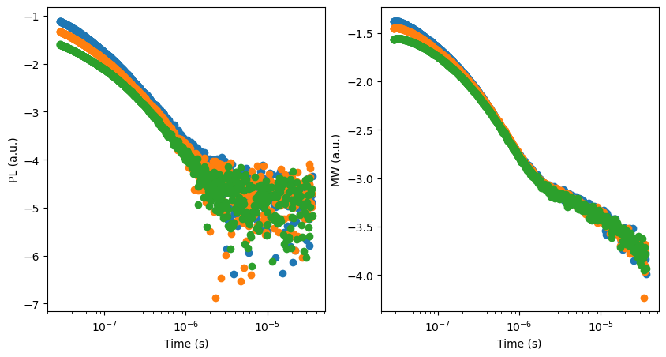
Define the free parameters to be optimized
[5]:
# define Fitparameters
True_values = {'kdirect': 3.9e-17, 'ktrap': 4e-18, 'kdetrap':3.1e-18,'Bulk_tr':1.6e23,'p_0':0, 'QE': 1, 'I_PL': 1e-32, 'N0': 1.04103e24, 'r_mu':4.2, 'I_MC':2.2e-26} # Contains a good set of parameters for the model to fit the data
params = []
# PL only parameters
I_PL = Fitparam(name = 'I_PL', val = True_values['I_PL'], lims = [5e-33, 6e-32], relRange = 1, range_type = 'log',
lim_type = 'absolute',optim_type = 'log', axis_type='log',display_name= 'I$_{PL}$',unit='')
params.append(I_PL)
# MW only parameters
I_MC = Fitparam(name = 'I_MC', val = True_values['I_MC'], lims = [7e-27, 8e-26], relRange = 1, range_type = 'log',
lim_type = 'absolute',optim_type = 'log', axis_type='log',display_name= 'I$_{MC}$',unit='')
params.append(I_MC)
r_mu = Fitparam(name = 'r_mu', val = True_values['r_mu'], lims = [0.5, 10], relRange = 1, range_type = 'log',
lim_type = 'absolute',optim_type='log', display_name = 'r$_\mu$',unit='')
params.append(r_mu)
# Parameters for both
kdirect = Fitparam(name = 'kdirect', val = True_values['kdirect'], lims = [9e-18,9e-17], relRange = 1, range_type = 'log',
lim_type = 'absolute',optim_type='log', display_name = 'k$_2$',unit='m$^{3}$ s$^{-1}$')
params.append(kdirect)
ktrap = Fitparam(name = 'ktrap', val = True_values['ktrap'], lims = [1e-19, 9e-18] , relRange = 1, range_type = 'log',
lim_type = 'absolute',optim_type='log', display_name = 'k$_{trap}$',unit='m$^{3}$ s$^{-1}$')
params.append(ktrap)
kdetrap = Fitparam(name = 'kdetrap', val = True_values['kdetrap'], lims = [8e-19, 8e-17], relRange = 1, range_type = 'log',
lim_type = 'absolute',optim_type='log', display_name = 'k$_{detrap}$',unit='m$^{3}$ s$^{-1}$')
params.append(kdetrap)
Bulk_tr = Fitparam(name = 'Bulk_tr', val = True_values['Bulk_tr'], lims = [7e21, 9e23], relRange = 1, range_type = 'log',
lim_type = 'absolute',optim_type='log', display_name = 'N$_T$',unit='m$^{-3}$')
params.append(Bulk_tr)
p_0 = Fitparam(name = 'p_0', val = True_values['p_0'], lims = [1e17, 1.5e25], relRange = 0, range_type = 'log',
lim_type = 'absolute',optim_type='log', display_name = 'p$_0$',unit='m$^{-3}$')
params.append(p_0)
# Currently unused parameters
QE = Fitparam(name = 'QE', val = True_values['QE'], lims = [0.02, 1], relRange = 0, range_type = 'linear',
lim_type = 'absolute',optim_type = 'linear', display_name = 'QE',unit='')
params.append(QE)
N0 = Fitparam(name = 'N0', val = True_values['N0'], lims = [6.5e21, 6.5e25], relRange = 0, range_type = 'log',
lim_type = 'absolute',optim_type = 'log', axis_type='log',display_name= 'N$_0$',unit='m$^{-3}$')
params.append(N0)
[6]:
# Define the experimental conditions
fpu = 1e3 # pump frequency in Hz
background = 0 # background carrier density in m^-3
N_init = 1.04103e24 # initial carrier density from the pulse in m^-3
# Initialize the agents for the TrPL and TrMC models
func = partial(Bimolecular_Trapping_Detrapping_equation, solver_func='odeint', method='Radau')
trPL = TrPL_agent(trPL_model = func)
trPL.pump_params['fpu'] = fpu
trPL.pump_params['N0'] = N_init
trPL.pump_params['background'] = 0
# create trMC agent
trMC = TrMC_agent(trMC_model = func)
trMC.pump_params['fpu'] = fpu
trMC.pump_params['N0'] = N_init
trMC.pump_params['background'] = 0
[7]:
# Define a wrapper function for the PL model to match the experimental conditions by adding a background offset to the PL signal due to the measurement setup
def trPL_wrap(X,params,X_dimensions=[],take_log=False,back_PL=0):
signal = trPL.trPL(X,params,X_dimensions=X_dimensions,take_log=False)
for i in range(len(signal)):
signal[i] = signal[i] + back_PL[i]
if take_log:
signal = np.log10(signal)
#Check if the signal contains any NaNs
if np.isnan(signal).any():
# Split data into datasets with different G_fracs
Gfs = set(X[:,1])
for Gf in Gfs:
index = np.where(Gf == X[:,1])
signal_temp = signal[index]
X_temp = X[index]
if np.isnan(signal_temp).any():
# Create a mask to filter out all NaNs
mask_NaNs = np.isnan(signal_temp)
# Signal and X without NaNs:
X_interp = X_temp[~mask_NaNs]
signal_temp = signal_temp[~mask_NaNs]
signal_interp = np.interp(X_temp[:,0], X_interp[:,0], signal_temp)
signal[index] = signal_interp
if np.isnan(signal).any():
raise ValueError("Signal contains NaN(s)")
return signal
[8]:
# test the model with the predefine parameters from True_values (obtained from a previous run)
X_dimensions = ['t','Gfrac']
y_PL_model = trPL_wrap(X,params,X_dimensions=X_dimensions,take_log=True, back_PL=back_PL)
y_MC_model = trMC.trMC(X,params,X_dimensions=X_dimensions,take_log=True)
# plot PL
fig2, (ax1,ax2) = plt.subplots(1,2,figsize=(10,5))
for i in range(len(data.X_processed)):
ax1.semilogx(data.X_processed[i], data.y_processed_PL[i], 'o', label="PL")
for i in range(len(data.X_processed)):
ax1.semilogx(data.X_processed[i], y_PL_model[np.where(X[:,1]==data.Gfracs[i])], '-', color='red')
ax1.set_xlabel('Time (s)')
ax1.set_ylabel('PL (a.u.)')
# plot MW
for i in range(len(data.X_processed)):
ax2.semilogx(data.X_processed[i], data.y_processed_MW[i], 'o', label="MW")
for i in range(len(data.X_processed)):
ax2.semilogx(data.X_processed[i], y_MC_model[np.where(X[:,1]==data.Gfracs[i])], '-', color='red')
plt.show()
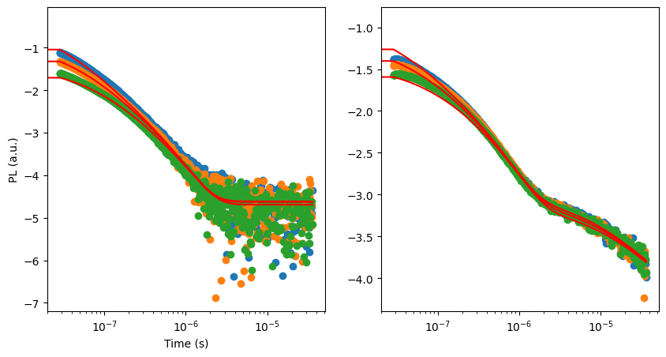
Start the optimization
[9]:
# Define the targets and the models
X_dimensions = ['t','Gfrac']
y_dimension = 'PL [a.u.]'
target = {'model':partial(trPL_wrap,X_dimensions=X_dimensions,take_log=True, back_PL = back_PL),'target_name':'trPL',
'data':{'X':X,'y':y_PL,'X_dimensions':X_dimensions,'X_units':['s',''],'y_dimension':y_dimension,'y_unit':''}
,'target_weight':1, 'weight':1}
y_dimension = '$MW$ [a.u.]'
target2 = {'model':partial(trMC.trMC,X_dimensions=X_dimensions,take_log=True),'target_name':'trMC',
'data':{'X':X,'y':y_MW,'X_dimensions':X_dimensions,'X_units':['s',''],'y_dimension':y_dimension,'y_unit':''}
,'target_weight':1, 'weight':1}
targets = [target, target2]
obj_type='MSE'#'hausdorff'
loss='linear'
threshold=0.5#50
mo = MooBOtorch(params=params, targets= targets) # initialize the optimization object
kwargs_posterior = {'Nres':10,'Ninteg':1e3,'logscale':True,'vmin':1e-100,'zoom':0,'min_prob':1e-40,'clear_axis':False,'True_values':True_values,'show_points':True,'savefig':False,'figname':'param_posterior','full_grid':True,'randomize':True}
ax_client = mo.BoTorchOpti(n_jobs=[10,2], n_step_points = [80, 120], models=['Sobol','MOO'],obj_type=obj_type,loss=loss,threshold=threshold,use_CUDA=True,is_MOO=True,verbose=True,show_posterior=True,kwargs_posterior=kwargs_posterior)
[INFO 01-30 08:51:51] ax.service.ax_client: Starting optimization with verbose logging. To disable logging, set the `verbose_logging` argument to `False`. Note that float values in the logs are rounded to 6 decimal points.
[INFO 01-30 08:51:51] ax.service.utils.instantiation: Created search space: SearchSpace(parameters=[RangeParameter(name='I_PL', parameter_type=FLOAT, range=[-32.30102999566398, -31.221848749616356]), RangeParameter(name='I_MC', parameter_type=FLOAT, range=[-26.154901959985743, -25.096910013008056]), RangeParameter(name='r_mu', parameter_type=FLOAT, range=[-0.3010299956639812, 1.0]), RangeParameter(name='kdirect', parameter_type=FLOAT, range=[-17.045757490560675, -16.045757490560675]), RangeParameter(name='ktrap', parameter_type=FLOAT, range=[-19.0, -17.045757490560675]), RangeParameter(name='kdetrap', parameter_type=FLOAT, range=[-18.096910013008056, -16.096910013008056]), RangeParameter(name='Bulk_tr', parameter_type=FLOAT, range=[21.845098040014257, 23.954242509439325])], parameter_constraints=[]).
[INFO 01-30 08:51:51] ax.service.ax_client: Generated new trial 0 with parameters {'I_PL': -31.72137, 'I_MC': -25.186785, 'r_mu': 0.207593, 'kdirect': -16.905811, 'ktrap': -17.932067, 'kdetrap': -17.097835, 'Bulk_tr': 23.077968}.
[INFO 01-30 08:51:51] ax.service.ax_client: Generated new trial 1 with parameters {'I_PL': -31.524325, 'I_MC': -25.410339, 'r_mu': 0.013804, 'kdirect': -16.702351, 'ktrap': -17.967456, 'kdetrap': -16.368363, 'Bulk_tr': 23.877061}.
[INFO 01-30 08:51:51] ax.service.ax_client: Generated new trial 2 with parameters {'I_PL': -31.667026, 'I_MC': -25.188655, 'r_mu': 0.543334, 'kdirect': -16.124869, 'ktrap': -18.744691, 'kdetrap': -16.85021, 'Bulk_tr': 23.576355}.
[INFO 01-30 08:51:51] ax.service.ax_client: Generated new trial 3 with parameters {'I_PL': -31.788712, 'I_MC': -25.971933, 'r_mu': 0.850948, 'kdirect': -16.507411, 'ktrap': -18.998523, 'kdetrap': -16.746249, 'Bulk_tr': 22.456404}.
[INFO 01-30 08:51:51] ax.service.ax_client: Generated new trial 4 with parameters {'I_PL': -31.647257, 'I_MC': -25.40233, 'r_mu': 0.906692, 'kdirect': -16.371398, 'ktrap': -18.795071, 'kdetrap': -16.924151, 'Bulk_tr': 22.022438}.
[INFO 01-30 08:51:51] ax.service.ax_client: Generated new trial 5 with parameters {'I_PL': -31.456398, 'I_MC': -25.979601, 'r_mu': 0.190927, 'kdirect': -16.951297, 'ktrap': -17.597151, 'kdetrap': -16.114352, 'Bulk_tr': 21.923499}.
[INFO 01-30 08:51:51] ax.service.ax_client: Generated new trial 6 with parameters {'I_PL': -32.145307, 'I_MC': -25.770231, 'r_mu': 0.840022, 'kdirect': -16.279013, 'ktrap': -17.492827, 'kdetrap': -16.151105, 'Bulk_tr': 22.384346}.
[INFO 01-30 08:51:51] ax.service.ax_client: Generated new trial 7 with parameters {'I_PL': -31.585606, 'I_MC': -25.282566, 'r_mu': 0.734903, 'kdirect': -16.941187, 'ktrap': -18.503612, 'kdetrap': -16.460979, 'Bulk_tr': 22.217886}.
[INFO 01-30 08:51:51] ax.service.ax_client: Generated new trial 8 with parameters {'I_PL': -32.037857, 'I_MC': -25.230814, 'r_mu': 0.665942, 'kdirect': -16.720392, 'ktrap': -17.314885, 'kdetrap': -17.623486, 'Bulk_tr': 23.258055}.
[INFO 01-30 08:51:51] ax.service.ax_client: Generated new trial 9 with parameters {'I_PL': -32.272844, 'I_MC': -25.39818, 'r_mu': 0.109277, 'kdirect': -16.600522, 'ktrap': -18.936874, 'kdetrap': -17.304333, 'Bulk_tr': 22.701014}.
[INFO 01-30 08:51:54] ax.service.ax_client: Completed trial 0 with data: {'MSE_trPL': (0.365109, None), 'MSE_trMC': (0.331222, None)}.
[INFO 01-30 08:51:54] ax.service.ax_client: Completed trial 1 with data: {'MSE_trPL': (0.253007, None), 'MSE_trMC': (0.080023, None)}.
[INFO 01-30 08:51:54] ax.service.ax_client: Completed trial 2 with data: {'MSE_trPL': (0.117278, None), 'MSE_trMC': (0.05582, None)}.
[INFO 01-30 08:51:55] ax.service.ax_client: Completed trial 3 with data: {'MSE_trPL': (0.190988, None), 'MSE_trMC': (0.020173, None)}.
[INFO 01-30 08:51:55] ax.service.ax_client: Completed trial 4 with data: {'MSE_trPL': (0.222446, None), 'MSE_trMC': (0.271909, None)}.
[INFO 01-30 08:51:55] ax.service.ax_client: Completed trial 5 with data: {'MSE_trPL': (0.760955, None), 'MSE_trMC': (0.077639, None)}.
[INFO 01-30 08:51:55] ax.service.ax_client: Completed trial 6 with data: {'MSE_trPL': (0.089759, None), 'MSE_trMC': (0.073078, None)}.
[INFO 01-30 08:51:55] ax.service.ax_client: Completed trial 7 with data: {'MSE_trPL': (0.597937, None), 'MSE_trMC': (0.875247, None)}.
[INFO 01-30 08:51:55] ax.service.ax_client: Completed trial 8 with data: {'MSE_trPL': (0.079764, None), 'MSE_trMC': (0.418112, None)}.
[INFO 01-30 08:51:55] ax.service.ax_client: Completed trial 9 with data: {'MSE_trPL': (0.105102, None), 'MSE_trMC': (0.031276, None)}.
[INFO 01-30 08:51:55] ax.service.ax_client: Generated new trial 10 with parameters {'I_PL': -31.27803, 'I_MC': -25.57608, 'r_mu': 0.23097, 'kdirect': -16.230024, 'ktrap': -18.276341, 'kdetrap': -17.441083, 'Bulk_tr': 23.625359}.
[INFO 01-30 08:51:55] ax.service.ax_client: Generated new trial 11 with parameters {'I_PL': -32.035156, 'I_MC': -25.447206, 'r_mu': 0.800385, 'kdirect': -16.813401, 'ktrap': -18.276715, 'kdetrap': -17.102201, 'Bulk_tr': 21.892114}.
[INFO 01-30 08:51:55] ax.service.ax_client: Generated new trial 12 with parameters {'I_PL': -31.485182, 'I_MC': -25.36384, 'r_mu': 0.287805, 'kdirect': -16.785461, 'ktrap': -18.666962, 'kdetrap': -17.694763, 'Bulk_tr': 21.894403}.
[INFO 01-30 08:51:55] ax.service.ax_client: Generated new trial 13 with parameters {'I_PL': -31.743765, 'I_MC': -25.408008, 'r_mu': 0.778166, 'kdirect': -16.082873, 'ktrap': -18.717481, 'kdetrap': -17.174501, 'Bulk_tr': 22.704359}.
[INFO 01-30 08:51:55] ax.service.ax_client: Generated new trial 14 with parameters {'I_PL': -31.550104, 'I_MC': -26.133682, 'r_mu': 0.482544, 'kdirect': -16.960481, 'ktrap': -18.941616, 'kdetrap': -16.431214, 'Bulk_tr': 21.868454}.
[INFO 01-30 08:51:55] ax.service.ax_client: Generated new trial 15 with parameters {'I_PL': -31.375504, 'I_MC': -25.412235, 'r_mu': 0.773478, 'kdirect': -16.048333, 'ktrap': -18.902071, 'kdetrap': -16.790969, 'Bulk_tr': 23.158408}.
[INFO 01-30 08:51:55] ax.service.ax_client: Generated new trial 16 with parameters {'I_PL': -31.831382, 'I_MC': -25.298176, 'r_mu': 0.609588, 'kdirect': -16.071255, 'ktrap': -18.226138, 'kdetrap': -16.279743, 'Bulk_tr': 22.422784}.
[INFO 01-30 08:51:55] ax.service.ax_client: Generated new trial 17 with parameters {'I_PL': -31.817547, 'I_MC': -25.466992, 'r_mu': 0.670616, 'kdirect': -16.342227, 'ktrap': -18.830506, 'kdetrap': -17.918804, 'Bulk_tr': 22.209048}.
[INFO 01-30 08:51:55] ax.service.ax_client: Generated new trial 18 with parameters {'I_PL': -31.939122, 'I_MC': -25.80836, 'r_mu': 0.111619, 'kdirect': -16.159484, 'ktrap': -18.017984, 'kdetrap': -17.78409, 'Bulk_tr': 22.011764}.
[INFO 01-30 08:51:55] ax.service.ax_client: Generated new trial 19 with parameters {'I_PL': -32.177153, 'I_MC': -26.045871, 'r_mu': 0.997028, 'kdirect': -16.353465, 'ktrap': -18.640339, 'kdetrap': -16.262214, 'Bulk_tr': 21.895724}.
[INFO 01-30 08:51:55] ax.service.ax_client: Completed trial 10 with data: {'MSE_trPL': (0.385297, None), 'MSE_trMC': (0.078755, None)}.
[INFO 01-30 08:51:55] ax.service.ax_client: Completed trial 11 with data: {'MSE_trPL': (0.180505, None), 'MSE_trMC': (0.539322, None)}.
[INFO 01-30 08:51:55] ax.service.ax_client: Completed trial 12 with data: {'MSE_trPL': (0.625701, None), 'MSE_trMC': (0.175891, None)}.
[INFO 01-30 08:51:55] ax.service.ax_client: Completed trial 13 with data: {'MSE_trPL': (0.095214, None), 'MSE_trMC': (0.04411, None)}.
[INFO 01-30 08:51:55] ax.service.ax_client: Completed trial 14 with data: {'MSE_trPL': (0.659248, None), 'MSE_trMC': (0.055226, None)}.
[INFO 01-30 08:51:55] ax.service.ax_client: Completed trial 15 with data: {'MSE_trPL': (0.251312, None), 'MSE_trMC': (0.042164, None)}.
[INFO 01-30 08:51:55] ax.service.ax_client: Completed trial 16 with data: {'MSE_trPL': (0.081578, None), 'MSE_trMC': (0.033315, None)}.
[INFO 01-30 08:51:55] ax.service.ax_client: Completed trial 17 with data: {'MSE_trPL': (0.126265, None), 'MSE_trMC': (0.063002, None)}.
[INFO 01-30 08:51:55] ax.service.ax_client: Completed trial 18 with data: {'MSE_trPL': (0.07971, None), 'MSE_trMC': (0.477818, None)}.
[INFO 01-30 08:51:55] ax.service.ax_client: Completed trial 19 with data: {'MSE_trPL': (0.091114, None), 'MSE_trMC': (0.023006, None)}.
[INFO 01-30 08:51:55] ax.service.ax_client: Generated new trial 20 with parameters {'I_PL': -31.58261, 'I_MC': -25.372828, 'r_mu': 0.361669, 'kdirect': -16.654157, 'ktrap': -18.89769, 'kdetrap': -16.918587, 'Bulk_tr': 22.281458}.
[INFO 01-30 08:51:55] ax.service.ax_client: Generated new trial 21 with parameters {'I_PL': -31.272879, 'I_MC': -25.257289, 'r_mu': 0.155156, 'kdirect': -16.657756, 'ktrap': -18.140586, 'kdetrap': -16.327662, 'Bulk_tr': 22.21369}.
[INFO 01-30 08:51:55] ax.service.ax_client: Generated new trial 22 with parameters {'I_PL': -32.150928, 'I_MC': -26.051863, 'r_mu': 0.940444, 'kdirect': -16.187039, 'ktrap': -17.7265, 'kdetrap': -17.909449, 'Bulk_tr': 23.885844}.
[INFO 01-30 08:51:55] ax.service.ax_client: Generated new trial 23 with parameters {'I_PL': -31.659538, 'I_MC': -25.562916, 'r_mu': 0.547856, 'kdirect': -16.050259, 'ktrap': -18.544822, 'kdetrap': -16.208021, 'Bulk_tr': 22.237575}.
[INFO 01-30 08:51:55] ax.service.ax_client: Generated new trial 24 with parameters {'I_PL': -31.664024, 'I_MC': -25.940151, 'r_mu': 0.974859, 'kdirect': -16.695406, 'ktrap': -17.810186, 'kdetrap': -17.225135, 'Bulk_tr': 21.992622}.
[INFO 01-30 08:51:55] ax.service.ax_client: Generated new trial 25 with parameters {'I_PL': -31.3757, 'I_MC': -25.659431, 'r_mu': -0.182779, 'kdirect': -17.020279, 'ktrap': -18.936956, 'kdetrap': -17.877264, 'Bulk_tr': 23.772782}.
[INFO 01-30 08:51:55] ax.service.ax_client: Generated new trial 26 with parameters {'I_PL': -31.228018, 'I_MC': -25.32223, 'r_mu': 0.535267, 'kdirect': -16.762053, 'ktrap': -18.235732, 'kdetrap': -17.116986, 'Bulk_tr': 22.159281}.
[INFO 01-30 08:51:55] ax.service.ax_client: Generated new trial 27 with parameters {'I_PL': -31.621577, 'I_MC': -25.098023, 'r_mu': 0.286119, 'kdirect': -16.629833, 'ktrap': -18.161634, 'kdetrap': -17.254787, 'Bulk_tr': 23.885305}.
[INFO 01-30 08:51:55] ax.service.ax_client: Generated new trial 28 with parameters {'I_PL': -31.680605, 'I_MC': -25.256649, 'r_mu': 0.231376, 'kdirect': -16.862157, 'ktrap': -18.024526, 'kdetrap': -17.439692, 'Bulk_tr': 22.473878}.
[INFO 01-30 08:51:55] ax.service.ax_client: Generated new trial 29 with parameters {'I_PL': -31.466342, 'I_MC': -26.070812, 'r_mu': 0.636897, 'kdirect': -16.868106, 'ktrap': -17.61332, 'kdetrap': -16.941314, 'Bulk_tr': 23.469138}.
[INFO 01-30 08:51:55] ax.service.ax_client: Completed trial 20 with data: {'MSE_trPL': (0.425673, None), 'MSE_trMC': (0.128751, None)}.
[INFO 01-30 08:51:55] ax.service.ax_client: Completed trial 21 with data: {'MSE_trPL': (0.82171, None), 'MSE_trMC': (0.117416, None)}.
[INFO 01-30 08:51:55] ax.service.ax_client: Completed trial 22 with data: {'MSE_trPL': (0.177676, None), 'MSE_trMC': (0.147576, None)}.
[INFO 01-30 08:51:55] ax.service.ax_client: Completed trial 23 with data: {'MSE_trPL': (0.110988, None), 'MSE_trMC': (0.079646, None)}.
[INFO 01-30 08:51:55] ax.service.ax_client: Completed trial 24 with data: {'MSE_trPL': (0.365369, None), 'MSE_trMC': (0.103605, None)}.
[INFO 01-30 08:51:55] ax.service.ax_client: Completed trial 25 with data: {'MSE_trPL': (0.897222, None), 'MSE_trMC': (0.046017, None)}.
[INFO 01-30 08:51:55] ax.service.ax_client: Completed trial 26 with data: {'MSE_trPL': (0.993067, None), 'MSE_trMC': (0.362973, None)}.
[INFO 01-30 08:51:55] ax.service.ax_client: Completed trial 27 with data: {'MSE_trPL': (0.229155, None), 'MSE_trMC': (0.248445, None)}.
[INFO 01-30 08:51:55] ax.service.ax_client: Completed trial 28 with data: {'MSE_trPL': (0.435009, None), 'MSE_trMC': (0.279927, None)}.
[INFO 01-30 08:51:55] ax.service.ax_client: Completed trial 29 with data: {'MSE_trPL': (0.400057, None), 'MSE_trMC': (0.134478, None)}.
[INFO 01-30 08:51:56] ax.service.ax_client: Generated new trial 30 with parameters {'I_PL': -31.544931, 'I_MC': -25.611721, 'r_mu': 0.096165, 'kdirect': -16.354358, 'ktrap': -18.955372, 'kdetrap': -16.768797, 'Bulk_tr': 22.667855}.
[INFO 01-30 08:51:56] ax.service.ax_client: Generated new trial 31 with parameters {'I_PL': -32.085019, 'I_MC': -26.025561, 'r_mu': -0.080069, 'kdirect': -16.155043, 'ktrap': -17.62437, 'kdetrap': -17.783328, 'Bulk_tr': 23.523697}.
[INFO 01-30 08:51:56] ax.service.ax_client: Generated new trial 32 with parameters {'I_PL': -32.020411, 'I_MC': -25.123765, 'r_mu': 0.912868, 'kdirect': -16.349468, 'ktrap': -17.257068, 'kdetrap': -17.190622, 'Bulk_tr': 23.920318}.
[INFO 01-30 08:51:56] ax.service.ax_client: Generated new trial 33 with parameters {'I_PL': -31.371789, 'I_MC': -25.253536, 'r_mu': 0.81698, 'kdirect': -16.158316, 'ktrap': -18.61141, 'kdetrap': -17.591049, 'Bulk_tr': 23.14953}.
[INFO 01-30 08:51:56] ax.service.ax_client: Generated new trial 34 with parameters {'I_PL': -31.66141, 'I_MC': -25.577792, 'r_mu': 0.411652, 'kdirect': -16.363891, 'ktrap': -17.061138, 'kdetrap': -16.671184, 'Bulk_tr': 23.110468}.
[INFO 01-30 08:51:56] ax.service.ax_client: Generated new trial 35 with parameters {'I_PL': -32.049621, 'I_MC': -25.223009, 'r_mu': 0.021501, 'kdirect': -16.421846, 'ktrap': -18.394487, 'kdetrap': -17.253431, 'Bulk_tr': 23.762364}.
[INFO 01-30 08:51:56] ax.service.ax_client: Generated new trial 36 with parameters {'I_PL': -31.696503, 'I_MC': -25.9091, 'r_mu': 0.602606, 'kdirect': -16.564732, 'ktrap': -18.184843, 'kdetrap': -16.963773, 'Bulk_tr': 23.691423}.
[INFO 01-30 08:51:56] ax.service.ax_client: Generated new trial 37 with parameters {'I_PL': -32.123255, 'I_MC': -25.326741, 'r_mu': 0.756613, 'kdirect': -16.383784, 'ktrap': -18.157324, 'kdetrap': -18.078886, 'Bulk_tr': 22.368477}.
[INFO 01-30 08:51:56] ax.service.ax_client: Generated new trial 38 with parameters {'I_PL': -31.966087, 'I_MC': -25.860678, 'r_mu': 0.148934, 'kdirect': -16.925597, 'ktrap': -18.739725, 'kdetrap': -17.035148, 'Bulk_tr': 23.269278}.
[INFO 01-30 08:51:56] ax.service.ax_client: Generated new trial 39 with parameters {'I_PL': -31.855942, 'I_MC': -26.152409, 'r_mu': 0.928383, 'kdirect': -16.055047, 'ktrap': -17.059972, 'kdetrap': -16.24983, 'Bulk_tr': 23.158412}.
[INFO 01-30 08:51:56] ax.service.ax_client: Completed trial 30 with data: {'MSE_trPL': (0.287617, None), 'MSE_trMC': (0.124946, None)}.
[INFO 01-30 08:51:56] ax.service.ax_client: Completed trial 31 with data: {'MSE_trPL': (0.117871, None), 'MSE_trMC': (0.63286, None)}.
[INFO 01-30 08:51:56] ax.service.ax_client: Completed trial 32 with data: {'MSE_trPL': (0.25448, None), 'MSE_trMC': (0.268157, None)}.
[INFO 01-30 08:51:56] ax.service.ax_client: Completed trial 33 with data: {'MSE_trPL': (0.312346, None), 'MSE_trMC': (0.151163, None)}.
[INFO 01-30 08:51:56] ax.service.ax_client: Completed trial 34 with data: {'MSE_trPL': (0.104876, None), 'MSE_trMC': (0.085009, None)}.
[INFO 01-30 08:51:56] ax.service.ax_client: Completed trial 35 with data: {'MSE_trPL': (0.07312, None), 'MSE_trMC': (0.023235, None)}.
[INFO 01-30 08:51:56] ax.service.ax_client: Completed trial 36 with data: {'MSE_trPL': (0.194479, None), 'MSE_trMC': (0.100855, None)}.
[INFO 01-30 08:51:56] ax.service.ax_client: Completed trial 37 with data: {'MSE_trPL': (0.084518, None), 'MSE_trMC': (0.210853, None)}.
[INFO 01-30 08:51:56] ax.service.ax_client: Completed trial 38 with data: {'MSE_trPL': (0.242924, None), 'MSE_trMC': (0.05611, None)}.
[INFO 01-30 08:51:56] ax.service.ax_client: Completed trial 39 with data: {'MSE_trPL': (0.103548, None), 'MSE_trMC': (0.91867, None)}.
[INFO 01-30 08:51:56] ax.service.ax_client: Generated new trial 40 with parameters {'I_PL': -31.44991, 'I_MC': -25.649072, 'r_mu': -0.054255, 'kdirect': -16.487484, 'ktrap': -18.59738, 'kdetrap': -16.776428, 'Bulk_tr': 21.95851}.
[INFO 01-30 08:51:56] ax.service.ax_client: Generated new trial 41 with parameters {'I_PL': -32.047964, 'I_MC': -25.691212, 'r_mu': -0.194566, 'kdirect': -16.937208, 'ktrap': -18.466972, 'kdetrap': -16.151591, 'Bulk_tr': 23.546834}.
[INFO 01-30 08:51:56] ax.service.ax_client: Generated new trial 42 with parameters {'I_PL': -31.438909, 'I_MC': -25.523183, 'r_mu': 0.713783, 'kdirect': -16.156281, 'ktrap': -17.385362, 'kdetrap': -16.301584, 'Bulk_tr': 23.0082}.
[INFO 01-30 08:51:56] ax.service.ax_client: Generated new trial 43 with parameters {'I_PL': -31.384234, 'I_MC': -26.034449, 'r_mu': -0.163764, 'kdirect': -16.734376, 'ktrap': -17.74577, 'kdetrap': -17.86283, 'Bulk_tr': 23.737415}.
[INFO 01-30 08:51:56] ax.service.ax_client: Generated new trial 44 with parameters {'I_PL': -31.524221, 'I_MC': -25.407953, 'r_mu': 0.486873, 'kdirect': -16.844237, 'ktrap': -18.792958, 'kdetrap': -17.969294, 'Bulk_tr': 23.689114}.
[INFO 01-30 08:51:56] ax.service.ax_client: Generated new trial 45 with parameters {'I_PL': -31.678797, 'I_MC': -25.232319, 'r_mu': 0.03358, 'kdirect': -16.302229, 'ktrap': -18.543067, 'kdetrap': -17.360626, 'Bulk_tr': 23.813472}.
[INFO 01-30 08:51:56] ax.service.ax_client: Generated new trial 46 with parameters {'I_PL': -31.980511, 'I_MC': -25.226188, 'r_mu': 0.564716, 'kdirect': -17.03478, 'ktrap': -17.234279, 'kdetrap': -17.971217, 'Bulk_tr': 23.572849}.
[INFO 01-30 08:51:56] ax.service.ax_client: Generated new trial 47 with parameters {'I_PL': -31.851787, 'I_MC': -26.100091, 'r_mu': 0.862528, 'kdirect': -16.476874, 'ktrap': -18.332197, 'kdetrap': -16.874854, 'Bulk_tr': 22.065932}.
[INFO 01-30 08:51:56] ax.service.ax_client: Generated new trial 48 with parameters {'I_PL': -31.570551, 'I_MC': -25.632713, 'r_mu': 0.623586, 'kdirect': -16.927445, 'ktrap': -17.954465, 'kdetrap': -18.018631, 'Bulk_tr': 23.196371}.
[INFO 01-30 08:51:56] ax.service.ax_client: Generated new trial 49 with parameters {'I_PL': -31.462755, 'I_MC': -25.891195, 'r_mu': 0.249645, 'kdirect': -16.219448, 'ktrap': -18.443352, 'kdetrap': -16.787145, 'Bulk_tr': 23.470348}.
[INFO 01-30 08:51:57] ax.service.ax_client: Completed trial 40 with data: {'MSE_trPL': (0.460129, None), 'MSE_trMC': (0.12555, None)}.
[INFO 01-30 08:51:57] ax.service.ax_client: Completed trial 41 with data: {'MSE_trPL': (0.180141, None), 'MSE_trMC': (0.094673, None)}.
[INFO 01-30 08:51:57] ax.service.ax_client: Completed trial 42 with data: {'MSE_trPL': (0.188683, None), 'MSE_trMC': (0.141026, None)}.
[INFO 01-30 08:51:57] ax.service.ax_client: Completed trial 43 with data: {'MSE_trPL': (0.39019, None), 'MSE_trMC': (0.233306, None)}.
[INFO 01-30 08:51:57] ax.service.ax_client: Completed trial 44 with data: {'MSE_trPL': (0.569755, None), 'MSE_trMC': (0.26832, None)}.
[INFO 01-30 08:51:57] ax.service.ax_client: Completed trial 45 with data: {'MSE_trPL': (0.143426, None), 'MSE_trMC': (0.009365, None)}.
[INFO 01-30 08:51:57] ax.service.ax_client: Completed trial 46 with data: {'MSE_trPL': (0.094942, None), 'MSE_trMC': (0.679606, None)}.
[INFO 01-30 08:51:57] ax.service.ax_client: Completed trial 47 with data: {'MSE_trPL': (0.14925, None), 'MSE_trMC': (0.04462, None)}.
[INFO 01-30 08:51:57] ax.service.ax_client: Completed trial 48 with data: {'MSE_trPL': (0.522855, None), 'MSE_trMC': (0.191249, None)}.
[INFO 01-30 08:51:57] ax.service.ax_client: Completed trial 49 with data: {'MSE_trPL': (0.253084, None), 'MSE_trMC': (0.456337, None)}.
[INFO 01-30 08:51:57] ax.service.ax_client: Generated new trial 50 with parameters {'I_PL': -32.117198, 'I_MC': -25.429993, 'r_mu': 0.959138, 'kdirect': -16.303111, 'ktrap': -18.381392, 'kdetrap': -18.082977, 'Bulk_tr': 23.24117}.
[INFO 01-30 08:51:57] ax.service.ax_client: Generated new trial 51 with parameters {'I_PL': -31.447157, 'I_MC': -25.846075, 'r_mu': 0.341101, 'kdirect': -16.504073, 'ktrap': -18.958431, 'kdetrap': -16.928866, 'Bulk_tr': 22.109127}.
[INFO 01-30 08:51:57] ax.service.ax_client: Generated new trial 52 with parameters {'I_PL': -31.475166, 'I_MC': -25.87883, 'r_mu': 0.062603, 'kdirect': -16.577178, 'ktrap': -17.238414, 'kdetrap': -17.374817, 'Bulk_tr': 23.12997}.
[INFO 01-30 08:51:57] ax.service.ax_client: Generated new trial 53 with parameters {'I_PL': -31.65598, 'I_MC': -25.57609, 'r_mu': 0.057544, 'kdirect': -16.754237, 'ktrap': -17.284581, 'kdetrap': -17.694527, 'Bulk_tr': 23.644551}.
[INFO 01-30 08:51:57] ax.service.ax_client: Generated new trial 54 with parameters {'I_PL': -31.999958, 'I_MC': -25.278272, 'r_mu': 0.404482, 'kdirect': -16.08056, 'ktrap': -18.704781, 'kdetrap': -16.760907, 'Bulk_tr': 23.734815}.
[INFO 01-30 08:51:57] ax.service.ax_client: Generated new trial 55 with parameters {'I_PL': -32.189051, 'I_MC': -25.458588, 'r_mu': 0.154109, 'kdirect': -16.966741, 'ktrap': -18.139355, 'kdetrap': -17.601473, 'Bulk_tr': 22.762072}.
[INFO 01-30 08:51:57] ax.service.ax_client: Generated new trial 56 with parameters {'I_PL': -31.880597, 'I_MC': -26.053904, 'r_mu': 0.641902, 'kdirect': -17.03731, 'ktrap': -18.761341, 'kdetrap': -17.113816, 'Bulk_tr': 23.107141}.
[INFO 01-30 08:51:57] ax.service.ax_client: Generated new trial 57 with parameters {'I_PL': -31.80361, 'I_MC': -25.226231, 'r_mu': 0.498831, 'kdirect': -16.812332, 'ktrap': -17.923077, 'kdetrap': -16.612821, 'Bulk_tr': 23.025805}.
[INFO 01-30 08:51:57] ax.service.ax_client: Generated new trial 58 with parameters {'I_PL': -31.813173, 'I_MC': -25.354693, 'r_mu': 0.461581, 'kdirect': -16.293242, 'ktrap': -18.620919, 'kdetrap': -17.607143, 'Bulk_tr': 23.662187}.
[INFO 01-30 08:51:57] ax.service.ax_client: Generated new trial 59 with parameters {'I_PL': -32.191973, 'I_MC': -25.499365, 'r_mu': -0.18344, 'kdirect': -16.208091, 'ktrap': -18.697686, 'kdetrap': -16.948871, 'Bulk_tr': 22.74545}.
[INFO 01-30 08:51:57] ax.service.ax_client: Completed trial 50 with data: {'MSE_trPL': (0.082992, None), 'MSE_trMC': (0.182812, None)}.
[INFO 01-30 08:51:57] ax.service.ax_client: Completed trial 51 with data: {'MSE_trPL': (0.475073, None), 'MSE_trMC': (0.098309, None)}.
[INFO 01-30 08:51:57] ax.service.ax_client: Completed trial 52 with data: {'MSE_trPL': (0.301311, None), 'MSE_trMC': (0.155547, None)}.
[INFO 01-30 08:51:57] ax.service.ax_client: Completed trial 53 with data: {'MSE_trPL': (0.129981, None), 'MSE_trMC': (0.085935, None)}.
[INFO 01-30 08:51:57] ax.service.ax_client: Completed trial 54 with data: {'MSE_trPL': (0.08735, None), 'MSE_trMC': (0.0308, None)}.
[INFO 01-30 08:51:57] ax.service.ax_client: Completed trial 55 with data: {'MSE_trPL': (0.179059, None), 'MSE_trMC': (0.14353, None)}.
[INFO 01-30 08:51:57] ax.service.ax_client: Completed trial 56 with data: {'MSE_trPL': (0.350966, None), 'MSE_trMC': (0.063089, None)}.
[INFO 01-30 08:51:57] ax.service.ax_client: Completed trial 57 with data: {'MSE_trPL': (0.260042, None), 'MSE_trMC': (0.423771, None)}.
[INFO 01-30 08:51:57] ax.service.ax_client: Completed trial 58 with data: {'MSE_trPL': (0.102363, None), 'MSE_trMC': (0.01961, None)}.
[INFO 01-30 08:51:57] ax.service.ax_client: Completed trial 59 with data: {'MSE_trPL': (0.110434, None), 'MSE_trMC': (0.233699, None)}.
[INFO 01-30 08:51:57] ax.service.ax_client: Generated new trial 60 with parameters {'I_PL': -31.969491, 'I_MC': -25.677548, 'r_mu': 0.243322, 'kdirect': -16.170597, 'ktrap': -18.184662, 'kdetrap': -16.765303, 'Bulk_tr': 22.014692}.
[INFO 01-30 08:51:57] ax.service.ax_client: Generated new trial 61 with parameters {'I_PL': -32.156252, 'I_MC': -25.266369, 'r_mu': 0.528712, 'kdirect': -16.575531, 'ktrap': -18.361373, 'kdetrap': -17.122857, 'Bulk_tr': 22.679222}.
[INFO 01-30 08:51:57] ax.service.ax_client: Generated new trial 62 with parameters {'I_PL': -31.56145, 'I_MC': -25.582409, 'r_mu': 0.185965, 'kdirect': -16.317846, 'ktrap': -17.144034, 'kdetrap': -18.042745, 'Bulk_tr': 22.631686}.
[INFO 01-30 08:51:58] ax.service.ax_client: Generated new trial 63 with parameters {'I_PL': -31.892645, 'I_MC': -26.12067, 'r_mu': -0.244857, 'kdirect': -16.887246, 'ktrap': -17.786372, 'kdetrap': -17.48347, 'Bulk_tr': 23.071012}.
[INFO 01-30 08:51:58] ax.service.ax_client: Generated new trial 64 with parameters {'I_PL': -31.418687, 'I_MC': -25.35114, 'r_mu': 0.030092, 'kdirect': -16.463598, 'ktrap': -18.227608, 'kdetrap': -16.196028, 'Bulk_tr': 23.878672}.
[INFO 01-30 08:51:58] ax.service.ax_client: Generated new trial 65 with parameters {'I_PL': -32.056983, 'I_MC': -25.362599, 'r_mu': -0.020466, 'kdirect': -16.734985, 'ktrap': -18.742887, 'kdetrap': -17.131048, 'Bulk_tr': 22.310367}.
[INFO 01-30 08:51:58] ax.service.ax_client: Generated new trial 66 with parameters {'I_PL': -31.603244, 'I_MC': -26.123149, 'r_mu': 0.749071, 'kdirect': -16.742831, 'ktrap': -17.062123, 'kdetrap': -17.92909, 'Bulk_tr': 23.291569}.
[INFO 01-30 08:51:58] ax.service.ax_client: Generated new trial 67 with parameters {'I_PL': -31.893052, 'I_MC': -26.027398, 'r_mu': 0.514053, 'kdirect': -16.047494, 'ktrap': -18.614351, 'kdetrap': -16.546023, 'Bulk_tr': 23.782022}.
[INFO 01-30 08:51:58] ax.service.ax_client: Generated new trial 68 with parameters {'I_PL': -31.989134, 'I_MC': -26.03959, 'r_mu': 0.668477, 'kdirect': -16.947856, 'ktrap': -18.414292, 'kdetrap': -18.019388, 'Bulk_tr': 22.216387}.
[INFO 01-30 08:51:58] ax.service.ax_client: Generated new trial 69 with parameters {'I_PL': -31.654747, 'I_MC': -25.483323, 'r_mu': 0.133216, 'kdirect': -16.512452, 'ktrap': -18.051105, 'kdetrap': -17.661322, 'Bulk_tr': 23.556457}.
[INFO 01-30 08:51:58] ax.service.ax_client: Completed trial 60 with data: {'MSE_trPL': (0.079965, None), 'MSE_trMC': (0.238537, None)}.
[INFO 01-30 08:51:58] ax.service.ax_client: Completed trial 61 with data: {'MSE_trPL': (0.097113, None), 'MSE_trMC': (0.248074, None)}.
[INFO 01-30 08:51:58] ax.service.ax_client: Completed trial 62 with data: {'MSE_trPL': (0.203955, None), 'MSE_trMC': (0.05425, None)}.
[INFO 01-30 08:51:58] ax.service.ax_client: Completed trial 63 with data: {'MSE_trPL': (0.228679, None), 'MSE_trMC': (0.323668, None)}.
[INFO 01-30 08:51:58] ax.service.ax_client: Completed trial 64 with data: {'MSE_trPL': (0.319847, None), 'MSE_trMC': (0.09641, None)}.
[INFO 01-30 08:51:58] ax.service.ax_client: Completed trial 65 with data: {'MSE_trPL': (0.148819, None), 'MSE_trMC': (0.055182, None)}.
[INFO 01-30 08:51:58] ax.service.ax_client: Completed trial 66 with data: {'MSE_trPL': (0.197287, None), 'MSE_trMC': (0.03292, None)}.
[INFO 01-30 08:51:58] ax.service.ax_client: Completed trial 67 with data: {'MSE_trPL': (0.077878, None), 'MSE_trMC': (0.708105, None)}.
[INFO 01-30 08:51:58] ax.service.ax_client: Completed trial 68 with data: {'MSE_trPL': (0.251852, None), 'MSE_trMC': (0.051127, None)}.
[INFO 01-30 08:51:58] ax.service.ax_client: Completed trial 69 with data: {'MSE_trPL': (0.205265, None), 'MSE_trMC': (0.017517, None)}.
[INFO 01-30 08:51:58] ax.service.ax_client: Generated new trial 70 with parameters {'I_PL': -32.190718, 'I_MC': -25.423198, 'r_mu': 0.651972, 'kdirect': -16.698094, 'ktrap': -17.661591, 'kdetrap': -17.369165, 'Bulk_tr': 21.853254}.
[INFO 01-30 08:51:58] ax.service.ax_client: Generated new trial 71 with parameters {'I_PL': -32.180469, 'I_MC': -25.32592, 'r_mu': -0.20578, 'kdirect': -16.543538, 'ktrap': -18.781736, 'kdetrap': -17.55589, 'Bulk_tr': 22.941256}.
[INFO 01-30 08:51:58] ax.service.ax_client: Generated new trial 72 with parameters {'I_PL': -32.176167, 'I_MC': -25.667468, 'r_mu': 0.941726, 'kdirect': -16.532635, 'ktrap': -17.90757, 'kdetrap': -16.711989, 'Bulk_tr': 23.242728}.
[INFO 01-30 08:51:58] ax.service.ax_client: Generated new trial 73 with parameters {'I_PL': -31.30593, 'I_MC': -25.720203, 'r_mu': 0.122761, 'kdirect': -16.114887, 'ktrap': -18.877946, 'kdetrap': -17.031917, 'Bulk_tr': 22.15573}.
[INFO 01-30 08:51:58] ax.service.ax_client: Generated new trial 74 with parameters {'I_PL': -31.238631, 'I_MC': -25.325283, 'r_mu': 0.024857, 'kdirect': -16.049545, 'ktrap': -17.582856, 'kdetrap': -16.867153, 'Bulk_tr': 23.570021}.
[INFO 01-30 08:51:58] ax.service.ax_client: Generated new trial 75 with parameters {'I_PL': -31.649802, 'I_MC': -25.813482, 'r_mu': -0.031124, 'kdirect': -16.685697, 'ktrap': -17.368982, 'kdetrap': -18.065708, 'Bulk_tr': 22.311956}.
[INFO 01-30 08:51:58] ax.service.ax_client: Generated new trial 76 with parameters {'I_PL': -31.765249, 'I_MC': -25.116851, 'r_mu': 0.835382, 'kdirect': -17.035744, 'ktrap': -17.642632, 'kdetrap': -16.320071, 'Bulk_tr': 23.145359}.
[INFO 01-30 08:51:58] ax.service.ax_client: Generated new trial 77 with parameters {'I_PL': -32.19209, 'I_MC': -25.914974, 'r_mu': 0.582817, 'kdirect': -16.987031, 'ktrap': -18.702168, 'kdetrap': -16.99686, 'Bulk_tr': 23.760169}.
[INFO 01-30 08:51:58] ax.service.ax_client: Generated new trial 78 with parameters {'I_PL': -31.507351, 'I_MC': -25.59665, 'r_mu': -0.157139, 'kdirect': -16.792743, 'ktrap': -17.716942, 'kdetrap': -17.065089, 'Bulk_tr': 23.283965}.
[INFO 01-30 08:51:58] ax.service.ax_client: Generated new trial 79 with parameters {'I_PL': -31.55793, 'I_MC': -25.722321, 'r_mu': 0.048157, 'kdirect': -16.302517, 'ktrap': -18.332374, 'kdetrap': -17.014378, 'Bulk_tr': 23.386228}.
[INFO 01-30 08:51:59] ax.service.ax_client: Completed trial 70 with data: {'MSE_trPL': (0.114736, None), 'MSE_trMC': (0.290651, None)}.
[INFO 01-30 08:51:59] ax.service.ax_client: Completed trial 71 with data: {'MSE_trPL': (0.094365, None), 'MSE_trMC': (0.01653, None)}.
[INFO 01-30 08:51:59] ax.service.ax_client: Completed trial 72 with data: {'MSE_trPL': (0.081733, None), 'MSE_trMC': (0.166546, None)}.
[INFO 01-30 08:51:59] ax.service.ax_client: Completed trial 73 with data: {'MSE_trPL': (0.352783, None), 'MSE_trMC': (0.411325, None)}.
[INFO 01-30 08:51:59] ax.service.ax_client: Completed trial 74 with data: {'MSE_trPL': (0.222697, None), 'MSE_trMC': (0.073231, None)}.
[INFO 01-30 08:51:59] ax.service.ax_client: Completed trial 75 with data: {'MSE_trPL': (0.356924, None), 'MSE_trMC': (0.101484, None)}.
[INFO 01-30 08:51:59] ax.service.ax_client: Completed trial 76 with data: {'MSE_trPL': (0.296938, None), 'MSE_trMC': (1.197215, None)}.
[INFO 01-30 08:51:59] ax.service.ax_client: Completed trial 77 with data: {'MSE_trPL': (0.16579, None), 'MSE_trMC': (0.079754, None)}.
[INFO 01-30 08:51:59] ax.service.ax_client: Completed trial 78 with data: {'MSE_trPL': (0.433903, None), 'MSE_trMC': (0.034133, None)}.
[INFO 01-30 08:51:59] ax.service.ax_client: Completed trial 79 with data: {'MSE_trPL': (0.224156, None), 'MSE_trMC': (0.255062, None)}.
[INFO 01-30 08:52:06] ax.service.ax_client: Generated new trial 80 with parameters {'I_PL': -32.203367, 'I_MC': -25.978166, 'r_mu': 0.914943, 'kdirect': -16.472132, 'ktrap': -18.286575, 'kdetrap': -18.09691, 'Bulk_tr': 22.874804}.
[INFO 01-30 08:52:06] ax.modelbridge.torch: The observations are identical to the last set of observations used to fit the model. Skipping model fitting.
[INFO 01-30 08:52:09] ax.service.ax_client: Generated new trial 81 with parameters {'I_PL': -32.082361, 'I_MC': -25.918046, 'r_mu': 0.644603, 'kdirect': -16.647995, 'ktrap': -17.045757, 'kdetrap': -18.09691, 'Bulk_tr': 22.99728}.
[INFO 01-30 08:52:13] ax.service.ax_client: Completed trial 80 with data: {'MSE_trPL': (0.090685, None), 'MSE_trMC': (0.046882, None)}.
[INFO 01-30 08:52:13] ax.service.ax_client: Completed trial 81 with data: {'MSE_trPL': (0.07516, None), 'MSE_trMC': (0.012822, None)}.
[INFO 01-30 08:52:20] ax.service.ax_client: Generated new trial 82 with parameters {'I_PL': -32.30103, 'I_MC': -25.918867, 'r_mu': 0.83951, 'kdirect': -16.478521, 'ktrap': -18.553732, 'kdetrap': -16.394627, 'Bulk_tr': 21.845098}.
[INFO 01-30 08:52:20] ax.modelbridge.torch: The observations are identical to the last set of observations used to fit the model. Skipping model fitting.
[INFO 01-30 08:52:22] ax.service.ax_client: Generated new trial 83 with parameters {'I_PL': -31.782874, 'I_MC': -25.668096, 'r_mu': 0.032291, 'kdirect': -16.706478, 'ktrap': -17.045757, 'kdetrap': -16.954638, 'Bulk_tr': 23.954243}.
[INFO 01-30 08:52:22] ax.service.ax_client: Completed trial 82 with data: {'MSE_trPL': (0.108253, None), 'MSE_trMC': (0.019285, None)}.
[INFO 01-30 08:52:22] ax.service.ax_client: Completed trial 83 with data: {'MSE_trPL': (0.245139, None), 'MSE_trMC': (0.080407, None)}.
[INFO 01-30 08:52:27] ax.service.ax_client: Generated new trial 84 with parameters {'I_PL': -31.885246, 'I_MC': -25.348854, 'r_mu': 0.287237, 'kdirect': -16.23501, 'ktrap': -17.528735, 'kdetrap': -17.567824, 'Bulk_tr': 22.822668}.
[INFO 01-30 08:52:27] ax.modelbridge.torch: The observations are identical to the last set of observations used to fit the model. Skipping model fitting.
[INFO 01-30 08:52:30] ax.service.ax_client: Generated new trial 85 with parameters {'I_PL': -31.957528, 'I_MC': -25.686711, 'r_mu': 0.666681, 'kdirect': -16.380861, 'ktrap': -17.369737, 'kdetrap': -18.09691, 'Bulk_tr': 22.752033}.
[INFO 01-30 08:52:30] ax.service.ax_client: Completed trial 84 with data: {'MSE_trPL': (0.07578, None), 'MSE_trMC': (0.0057, None)}.
[INFO 01-30 08:52:30] ax.service.ax_client: Completed trial 85 with data: {'MSE_trPL': (0.077964, None), 'MSE_trMC': (0.007111, None)}.
[INFO 01-30 08:52:38] ax.service.ax_client: Generated new trial 86 with parameters {'I_PL': -32.093133, 'I_MC': -25.827707, 'r_mu': 0.992745, 'kdirect': -16.29283, 'ktrap': -18.626661, 'kdetrap': -17.031716, 'Bulk_tr': 22.426484}.
[INFO 01-30 08:52:38] ax.modelbridge.torch: The observations are identical to the last set of observations used to fit the model. Skipping model fitting.
[INFO 01-30 08:52:40] ax.service.ax_client: Generated new trial 87 with parameters {'I_PL': -31.57429, 'I_MC': -25.328646, 'r_mu': 0.290686, 'kdirect': -16.156871, 'ktrap': -17.199307, 'kdetrap': -18.09691, 'Bulk_tr': 23.779737}.
[INFO 01-30 08:52:40] ax.service.ax_client: Completed trial 86 with data: {'MSE_trPL': (0.083658, None), 'MSE_trMC': (0.030177, None)}.
[INFO 01-30 08:52:40] ax.service.ax_client: Completed trial 87 with data: {'MSE_trPL': (0.204901, None), 'MSE_trMC': (0.230692, None)}.
[INFO 01-30 08:52:47] ax.service.ax_client: Generated new trial 88 with parameters {'I_PL': -31.910639, 'I_MC': -25.35664, 'r_mu': 0.25356, 'kdirect': -16.269725, 'ktrap': -18.286905, 'kdetrap': -17.115293, 'Bulk_tr': 22.896609}.
[INFO 01-30 08:52:47] ax.modelbridge.torch: The observations are identical to the last set of observations used to fit the model. Skipping model fitting.
[INFO 01-30 08:52:49] ax.service.ax_client: Generated new trial 89 with parameters {'I_PL': -32.012281, 'I_MC': -25.37799, 'r_mu': 0.130563, 'kdirect': -16.417511, 'ktrap': -17.189822, 'kdetrap': -17.148551, 'Bulk_tr': 22.314224}.
[INFO 01-30 08:52:49] ax.service.ax_client: Completed trial 88 with data: {'MSE_trPL': (0.085645, None), 'MSE_trMC': (0.022423, None)}.
[INFO 01-30 08:52:49] ax.service.ax_client: Completed trial 89 with data: {'MSE_trPL': (0.082885, None), 'MSE_trMC': (0.011722, None)}.
[INFO 01-30 08:52:55] ax.service.ax_client: Generated new trial 90 with parameters {'I_PL': -32.085214, 'I_MC': -25.585789, 'r_mu': 0.39927, 'kdirect': -16.478717, 'ktrap': -17.548816, 'kdetrap': -17.681961, 'Bulk_tr': 22.664396}.
[INFO 01-30 08:52:55] ax.modelbridge.torch: The observations are identical to the last set of observations used to fit the model. Skipping model fitting.
[INFO 01-30 08:52:57] ax.service.ax_client: Generated new trial 91 with parameters {'I_PL': -31.813902, 'I_MC': -25.211048, 'r_mu': 0.251017, 'kdirect': -16.050712, 'ktrap': -17.121683, 'kdetrap': -16.556527, 'Bulk_tr': 22.38237}.
[INFO 01-30 08:52:57] ax.service.ax_client: Completed trial 90 with data: {'MSE_trPL': (0.082641, None), 'MSE_trMC': (0.010026, None)}.
[INFO 01-30 08:52:57] ax.service.ax_client: Completed trial 91 with data: {'MSE_trPL': (0.075672, None), 'MSE_trMC': (0.041505, None)}.
[INFO 01-30 08:53:05] ax.service.ax_client: Generated new trial 92 with parameters {'I_PL': -31.924303, 'I_MC': -25.47373, 'r_mu': 0.526932, 'kdirect': -16.244501, 'ktrap': -17.241601, 'kdetrap': -17.315543, 'Bulk_tr': 22.197039}.
[INFO 01-30 08:53:05] ax.modelbridge.torch: The observations are identical to the last set of observations used to fit the model. Skipping model fitting.
[INFO 01-30 08:53:06] ax.service.ax_client: Generated new trial 93 with parameters {'I_PL': -32.115474, 'I_MC': -25.644464, 'r_mu': 0.511975, 'kdirect': -16.420273, 'ktrap': -19.0, 'kdetrap': -17.965516, 'Bulk_tr': 23.703083}.
[INFO 01-30 08:53:06] ax.service.ax_client: Completed trial 92 with data: {'MSE_trPL': (0.079503, None), 'MSE_trMC': (0.021432, None)}.
[INFO 01-30 08:53:06] ax.service.ax_client: Completed trial 93 with data: {'MSE_trPL': (0.082963, None), 'MSE_trMC': (0.020151, None)}.
[INFO 01-30 08:53:12] ax.service.ax_client: Generated new trial 94 with parameters {'I_PL': -32.100285, 'I_MC': -25.883884, 'r_mu': 0.580686, 'kdirect': -16.673782, 'ktrap': -18.028382, 'kdetrap': -18.09691, 'Bulk_tr': 23.603316}.
[INFO 01-30 08:53:12] ax.modelbridge.torch: The observations are identical to the last set of observations used to fit the model. Skipping model fitting.
[INFO 01-30 08:53:14] ax.service.ax_client: Generated new trial 95 with parameters {'I_PL': -31.761979, 'I_MC': -25.09691, 'r_mu': -0.098975, 'kdirect': -16.045757, 'ktrap': -17.98146, 'kdetrap': -16.313066, 'Bulk_tr': 23.100507}.
[INFO 01-30 08:53:14] ax.service.ax_client: Completed trial 94 with data: {'MSE_trPL': (0.085532, None), 'MSE_trMC': (0.011171, None)}.
[INFO 01-30 08:53:14] ax.service.ax_client: Completed trial 95 with data: {'MSE_trPL': (0.079989, None), 'MSE_trMC': (0.062037, None)}.
[INFO 01-30 08:53:20] ax.service.ax_client: Generated new trial 96 with parameters {'I_PL': -32.071962, 'I_MC': -25.580671, 'r_mu': 0.535231, 'kdirect': -16.353502, 'ktrap': -18.58919, 'kdetrap': -17.341215, 'Bulk_tr': 23.44855}.
[INFO 01-30 08:53:20] ax.modelbridge.torch: The observations are identical to the last set of observations used to fit the model. Skipping model fitting.
[INFO 01-30 08:53:22] ax.service.ax_client: Generated new trial 97 with parameters {'I_PL': -32.204285, 'I_MC': -26.154902, 'r_mu': 1.0, 'kdirect': -16.582408, 'ktrap': -19.0, 'kdetrap': -16.599524, 'Bulk_tr': 21.845098}.
[INFO 01-30 08:53:22] ax.service.ax_client: Completed trial 96 with data: {'MSE_trPL': (0.078935, None), 'MSE_trMC': (0.02492, None)}.
[INFO 01-30 08:53:22] ax.service.ax_client: Completed trial 97 with data: {'MSE_trPL': (0.099479, None), 'MSE_trMC': (0.020724, None)}.
[INFO 01-30 08:53:30] ax.service.ax_client: Generated new trial 98 with parameters {'I_PL': -32.253195, 'I_MC': -25.426172, 'r_mu': -0.132468, 'kdirect': -16.641906, 'ktrap': -19.0, 'kdetrap': -17.338999, 'Bulk_tr': 23.954243}.
[INFO 01-30 08:53:30] ax.modelbridge.torch: The observations are identical to the last set of observations used to fit the model. Skipping model fitting.
[INFO 01-30 08:53:33] ax.service.ax_client: Generated new trial 99 with parameters {'I_PL': -32.020769, 'I_MC': -25.340488, 'r_mu': 0.09147, 'kdirect': -16.365869, 'ktrap': -19.0, 'kdetrap': -17.951546, 'Bulk_tr': 23.298725}.
[INFO 01-30 08:53:33] ax.service.ax_client: Completed trial 98 with data: {'MSE_trPL': (0.100476, None), 'MSE_trMC': (0.016273, None)}.
[INFO 01-30 08:53:33] ax.service.ax_client: Completed trial 99 with data: {'MSE_trPL': (0.084411, None), 'MSE_trMC': (0.013837, None)}.
[INFO 01-30 08:53:39] ax.service.ax_client: Generated new trial 100 with parameters {'I_PL': -32.028162, 'I_MC': -25.142894, 'r_mu': -0.30103, 'kdirect': -16.343178, 'ktrap': -19.0, 'kdetrap': -17.148295, 'Bulk_tr': 23.900137}.
[INFO 01-30 08:53:39] ax.modelbridge.torch: The observations are identical to the last set of observations used to fit the model. Skipping model fitting.
[INFO 01-30 08:53:41] ax.service.ax_client: Generated new trial 101 with parameters {'I_PL': -32.076267, 'I_MC': -25.82384, 'r_mu': 0.975772, 'kdirect': -16.300234, 'ktrap': -19.0, 'kdetrap': -16.09691, 'Bulk_tr': 21.845098}.
[INFO 01-30 08:53:41] ax.service.ax_client: Completed trial 100 with data: {'MSE_trPL': (0.078165, None), 'MSE_trMC': (0.008038, None)}.
[INFO 01-30 08:53:41] ax.service.ax_client: Completed trial 101 with data: {'MSE_trPL': (0.082626, None), 'MSE_trMC': (0.024575, None)}.
[INFO 01-30 08:53:47] ax.service.ax_client: Generated new trial 102 with parameters {'I_PL': -31.73176, 'I_MC': -25.52741, 'r_mu': 0.405976, 'kdirect': -16.388061, 'ktrap': -18.247791, 'kdetrap': -17.874093, 'Bulk_tr': 22.763293}.
[INFO 01-30 08:53:47] ax.modelbridge.torch: The observations are identical to the last set of observations used to fit the model. Skipping model fitting.
[INFO 01-30 08:53:49] ax.service.ax_client: Generated new trial 103 with parameters {'I_PL': -32.130141, 'I_MC': -25.172073, 'r_mu': -0.30103, 'kdirect': -16.38937, 'ktrap': -18.604303, 'kdetrap': -18.09681, 'Bulk_tr': 23.716032}.
[INFO 01-30 08:53:49] ax.service.ax_client: Completed trial 102 with data: {'MSE_trPL': (0.172792, None), 'MSE_trMC': (0.018962, None)}.
[INFO 01-30 08:53:49] ax.service.ax_client: Completed trial 103 with data: {'MSE_trPL': (0.079423, None), 'MSE_trMC': (0.040284, None)}.
[INFO 01-30 08:53:59] ax.service.ax_client: Generated new trial 104 with parameters {'I_PL': -31.928251, 'I_MC': -25.09691, 'r_mu': -0.155016, 'kdirect': -16.189051, 'ktrap': -18.751785, 'kdetrap': -17.510632, 'Bulk_tr': 22.133327}.
[INFO 01-30 08:53:59] ax.modelbridge.torch: The observations are identical to the last set of observations used to fit the model. Skipping model fitting.
[INFO 01-30 08:54:01] ax.service.ax_client: Generated new trial 105 with parameters {'I_PL': -32.222495, 'I_MC': -26.154902, 'r_mu': 1.0, 'kdirect': -16.785276, 'ktrap': -17.447859, 'kdetrap': -18.09691, 'Bulk_tr': 23.26491}.
[INFO 01-30 08:54:01] ax.service.ax_client: Completed trial 104 with data: {'MSE_trPL': (0.081067, None), 'MSE_trMC': (0.020914, None)}.
[INFO 01-30 08:54:01] ax.service.ax_client: Completed trial 105 with data: {'MSE_trPL': (0.092924, None), 'MSE_trMC': (0.011642, None)}.
[INFO 01-30 08:54:04] ax.service.ax_client: Generated new trial 106 with parameters {'I_PL': -31.997354, 'I_MC': -25.131476, 'r_mu': -0.16218, 'kdirect': -16.294208, 'ktrap': -18.471707, 'kdetrap': -17.362688, 'Bulk_tr': 23.046295}.
[INFO 01-30 08:54:04] ax.modelbridge.torch: The observations are identical to the last set of observations used to fit the model. Skipping model fitting.
[INFO 01-30 08:54:06] ax.service.ax_client: Generated new trial 107 with parameters {'I_PL': -31.822662, 'I_MC': -25.219742, 'r_mu': 0.110186, 'kdirect': -16.178508, 'ktrap': -17.717924, 'kdetrap': -17.266741, 'Bulk_tr': 22.071072}.
[INFO 01-30 08:54:06] ax.service.ax_client: Completed trial 106 with data: {'MSE_trPL': (0.079931, None), 'MSE_trMC': (0.008597, None)}.
[INFO 01-30 08:54:06] ax.service.ax_client: Completed trial 107 with data: {'MSE_trPL': (0.091393, None), 'MSE_trMC': (0.021214, None)}.
[INFO 01-30 08:54:14] ax.service.ax_client: Generated new trial 108 with parameters {'I_PL': -31.840676, 'I_MC': -25.09691, 'r_mu': -0.064501, 'kdirect': -16.045757, 'ktrap': -19.0, 'kdetrap': -17.268987, 'Bulk_tr': 23.286915}.
[INFO 01-30 08:54:14] ax.modelbridge.torch: The observations are identical to the last set of observations used to fit the model. Skipping model fitting.
[INFO 01-30 08:54:16] ax.service.ax_client: Generated new trial 109 with parameters {'I_PL': -32.099423, 'I_MC': -26.154902, 'r_mu': 0.974648, 'kdirect': -16.672586, 'ktrap': -18.477691, 'kdetrap': -18.09691, 'Bulk_tr': 23.954243}.
[INFO 01-30 08:54:16] ax.service.ax_client: Completed trial 108 with data: {'MSE_trPL': (0.080534, None), 'MSE_trMC': (0.033726, None)}.
[INFO 01-30 08:54:16] ax.service.ax_client: Completed trial 109 with data: {'MSE_trPL': (0.089457, None), 'MSE_trMC': (0.023805, None)}.
[INFO 01-30 08:54:24] ax.service.ax_client: Generated new trial 110 with parameters {'I_PL': -32.220966, 'I_MC': -25.453398, 'r_mu': 0.295359, 'kdirect': -16.373057, 'ktrap': -17.045757, 'kdetrap': -17.839514, 'Bulk_tr': 22.222021}.
[INFO 01-30 08:54:24] ax.modelbridge.torch: The observations are identical to the last set of observations used to fit the model. Skipping model fitting.
[INFO 01-30 08:54:27] ax.service.ax_client: Generated new trial 111 with parameters {'I_PL': -32.30103, 'I_MC': -25.602715, 'r_mu': 0.139765, 'kdirect': -16.70737, 'ktrap': -17.045757, 'kdetrap': -16.56737, 'Bulk_tr': 22.478227}.
[INFO 01-30 08:54:27] ax.service.ax_client: Completed trial 110 with data: {'MSE_trPL': (0.095242, None), 'MSE_trMC': (0.007534, None)}.
[INFO 01-30 08:54:27] ax.service.ax_client: Completed trial 111 with data: {'MSE_trPL': (0.104567, None), 'MSE_trMC': (0.068492, None)}.
[INFO 01-30 08:54:36] ax.service.ax_client: Generated new trial 112 with parameters {'I_PL': -31.90117, 'I_MC': -25.430611, 'r_mu': 0.285832, 'kdirect': -16.345632, 'ktrap': -17.045757, 'kdetrap': -17.448232, 'Bulk_tr': 22.692563}.
[INFO 01-30 08:54:36] ax.modelbridge.torch: The observations are identical to the last set of observations used to fit the model. Skipping model fitting.
[INFO 01-30 08:54:38] ax.service.ax_client: Generated new trial 113 with parameters {'I_PL': -32.160532, 'I_MC': -26.154902, 'r_mu': 1.0, 'kdirect': -16.612142, 'ktrap': -17.045757, 'kdetrap': -18.09691, 'Bulk_tr': 22.44139}.
[INFO 01-30 08:54:38] ax.service.ax_client: Completed trial 112 with data: {'MSE_trPL': (0.074995, None), 'MSE_trMC': (0.00619, None)}.
[INFO 01-30 08:54:38] ax.service.ax_client: Completed trial 113 with data: {'MSE_trPL': (0.091972, None), 'MSE_trMC': (0.040386, None)}.
[INFO 01-30 08:54:48] ax.service.ax_client: Generated new trial 114 with parameters {'I_PL': -32.161679, 'I_MC': -25.09691, 'r_mu': -0.30103, 'kdirect': -16.381478, 'ktrap': -19.0, 'kdetrap': -18.09691, 'Bulk_tr': 21.845098}.
[INFO 01-30 08:54:48] ax.modelbridge.torch: The observations are identical to the last set of observations used to fit the model. Skipping model fitting.
[INFO 01-30 08:54:51] ax.service.ax_client: Generated new trial 115 with parameters {'I_PL': -32.108012, 'I_MC': -25.9985, 'r_mu': 1.0, 'kdirect': -16.409932, 'ktrap': -19.0, 'kdetrap': -16.722591, 'Bulk_tr': 21.845098}.
[INFO 01-30 08:54:51] ax.service.ax_client: Completed trial 114 with data: {'MSE_trPL': (0.088324, None), 'MSE_trMC': (0.01792, None)}.
[INFO 01-30 08:54:51] ax.service.ax_client: Completed trial 115 with data: {'MSE_trPL': (0.085739, None), 'MSE_trMC': (0.018534, None)}.
[INFO 01-30 08:55:00] ax.service.ax_client: Generated new trial 116 with parameters {'I_PL': -32.004175, 'I_MC': -25.09691, 'r_mu': -0.30103, 'kdirect': -16.370154, 'ktrap': -19.0, 'kdetrap': -17.600777, 'Bulk_tr': 22.69206}.
[INFO 01-30 08:55:00] ax.modelbridge.torch: The observations are identical to the last set of observations used to fit the model. Skipping model fitting.
[INFO 01-30 08:55:02] ax.service.ax_client: Generated new trial 117 with parameters {'I_PL': -32.120614, 'I_MC': -25.09691, 'r_mu': -0.30103, 'kdirect': -16.31168, 'ktrap': -17.770844, 'kdetrap': -17.910574, 'Bulk_tr': 21.845098}.
[INFO 01-30 08:55:03] ax.service.ax_client: Completed trial 116 with data: {'MSE_trPL': (0.087589, None), 'MSE_trMC': (0.01605, None)}.
[INFO 01-30 08:55:03] ax.service.ax_client: Completed trial 117 with data: {'MSE_trPL': (0.085472, None), 'MSE_trMC': (0.010547, None)}.
[INFO 01-30 08:55:10] ax.service.ax_client: Generated new trial 118 with parameters {'I_PL': -32.020079, 'I_MC': -25.234021, 'r_mu': -0.103406, 'kdirect': -16.365451, 'ktrap': -18.24985, 'kdetrap': -18.09691, 'Bulk_tr': 21.845098}.
[INFO 01-30 08:55:10] ax.modelbridge.torch: The observations are identical to the last set of observations used to fit the model. Skipping model fitting.
[INFO 01-30 08:55:13] ax.service.ax_client: Generated new trial 119 with parameters {'I_PL': -31.960768, 'I_MC': -25.841454, 'r_mu': 1.0, 'kdirect': -16.288164, 'ktrap': -19.0, 'kdetrap': -18.09691, 'Bulk_tr': 23.954243}.
[INFO 01-30 08:55:13] ax.service.ax_client: Completed trial 118 with data: {'MSE_trPL': (0.085762, None), 'MSE_trMC': (0.015908, None)}.
[INFO 01-30 08:55:13] ax.service.ax_client: Completed trial 119 with data: {'MSE_trPL': (0.077656, None), 'MSE_trMC': (0.041149, None)}.
[INFO 01-30 08:55:21] ax.service.ax_client: Generated new trial 120 with parameters {'I_PL': -31.94935, 'I_MC': -25.412535, 'r_mu': 0.284339, 'kdirect': -16.321447, 'ktrap': -19.0, 'kdetrap': -17.420395, 'Bulk_tr': 23.954243}.
[INFO 01-30 08:55:21] ax.modelbridge.torch: The observations are identical to the last set of observations used to fit the model. Skipping model fitting.
[INFO 01-30 08:55:23] ax.service.ax_client: Generated new trial 121 with parameters {'I_PL': -32.30103, 'I_MC': -25.925649, 'r_mu': 0.938662, 'kdirect': -16.46427, 'ktrap': -17.500575, 'kdetrap': -18.09691, 'Bulk_tr': 23.954243}.
[INFO 01-30 08:55:23] ax.service.ax_client: Completed trial 120 with data: {'MSE_trPL': (0.081538, None), 'MSE_trMC': (0.010164, None)}.
[INFO 01-30 08:55:23] ax.service.ax_client: Completed trial 121 with data: {'MSE_trPL': (0.244039, None), 'MSE_trMC': (0.039993, None)}.
[INFO 01-30 08:55:29] ax.service.ax_client: Generated new trial 122 with parameters {'I_PL': -32.191993, 'I_MC': -26.023185, 'r_mu': 1.0, 'kdirect': -16.471325, 'ktrap': -19.0, 'kdetrap': -16.09691, 'Bulk_tr': 22.335617}.
[INFO 01-30 08:55:29] ax.modelbridge.torch: The observations are identical to the last set of observations used to fit the model. Skipping model fitting.
[INFO 01-30 08:55:31] ax.service.ax_client: Generated new trial 123 with parameters {'I_PL': -32.214425, 'I_MC': -25.09691, 'r_mu': -0.30103, 'kdirect': -16.415436, 'ktrap': -17.045757, 'kdetrap': -16.742763, 'Bulk_tr': 21.845098}.
[INFO 01-30 08:55:31] ax.service.ax_client: Completed trial 122 with data: {'MSE_trPL': (0.091611, None), 'MSE_trMC': (0.021461, None)}.
[INFO 01-30 08:55:31] ax.service.ax_client: Completed trial 123 with data: {'MSE_trPL': (0.092601, None), 'MSE_trMC': (0.021382, None)}.
[INFO 01-30 08:55:37] ax.service.ax_client: Generated new trial 124 with parameters {'I_PL': -32.090523, 'I_MC': -25.22029, 'r_mu': -0.30103, 'kdirect': -16.466826, 'ktrap': -17.045757, 'kdetrap': -17.421256, 'Bulk_tr': 22.627736}.
[INFO 01-30 08:55:37] ax.modelbridge.torch: The observations are identical to the last set of observations used to fit the model. Skipping model fitting.
[INFO 01-30 08:55:39] ax.service.ax_client: Generated new trial 125 with parameters {'I_PL': -32.098826, 'I_MC': -25.675574, 'r_mu': 0.200625, 'kdirect': -16.729603, 'ktrap': -19.0, 'kdetrap': -18.09691, 'Bulk_tr': 23.954243}.
[INFO 01-30 08:55:39] ax.service.ax_client: Completed trial 124 with data: {'MSE_trPL': (0.073959, None), 'MSE_trMC': (0.035233, None)}.
[INFO 01-30 08:55:39] ax.service.ax_client: Completed trial 125 with data: {'MSE_trPL': (0.122623, None), 'MSE_trMC': (0.019362, None)}.
[INFO 01-30 08:55:47] ax.service.ax_client: Generated new trial 126 with parameters {'I_PL': -31.999096, 'I_MC': -25.09691, 'r_mu': -0.30103, 'kdirect': -16.19551, 'ktrap': -17.184454, 'kdetrap': -17.032175, 'Bulk_tr': 22.4654}.
[INFO 01-30 08:55:47] ax.modelbridge.torch: The observations are identical to the last set of observations used to fit the model. Skipping model fitting.
[INFO 01-30 08:55:49] ax.service.ax_client: Generated new trial 127 with parameters {'I_PL': -32.30103, 'I_MC': -25.09691, 'r_mu': -0.30103, 'kdirect': -16.402457, 'ktrap': -18.063001, 'kdetrap': -17.442424, 'Bulk_tr': 21.845098}.
[INFO 01-30 08:55:49] ax.service.ax_client: Completed trial 126 with data: {'MSE_trPL': (0.075504, None), 'MSE_trMC': (0.009796, None)}.
[INFO 01-30 08:55:49] ax.service.ax_client: Completed trial 127 with data: {'MSE_trPL': (0.113548, None), 'MSE_trMC': (0.019319, None)}.
[INFO 01-30 08:55:58] ax.service.ax_client: Generated new trial 128 with parameters {'I_PL': -31.959304, 'I_MC': -25.717289, 'r_mu': 0.488322, 'kdirect': -16.556224, 'ktrap': -17.045757, 'kdetrap': -18.09691, 'Bulk_tr': 22.901623}.
[INFO 01-30 08:55:58] ax.modelbridge.torch: The observations are identical to the last set of observations used to fit the model. Skipping model fitting.
[INFO 01-30 08:56:00] ax.service.ax_client: Generated new trial 129 with parameters {'I_PL': -32.142808, 'I_MC': -26.154902, 'r_mu': 0.739639, 'kdirect': -16.963858, 'ktrap': -17.045757, 'kdetrap': -18.09691, 'Bulk_tr': 22.983275}.
[INFO 01-30 08:56:00] ax.service.ax_client: Completed trial 128 with data: {'MSE_trPL': (0.081353, None), 'MSE_trMC': (0.018377, None)}.
[INFO 01-30 08:56:00] ax.service.ax_client: Completed trial 129 with data: {'MSE_trPL': (0.132455, None), 'MSE_trMC': (0.01913, None)}.
[INFO 01-30 08:56:08] ax.service.ax_client: Generated new trial 130 with parameters {'I_PL': -32.071963, 'I_MC': -26.123859, 'r_mu': 0.770777, 'kdirect': -16.754064, 'ktrap': -17.557226, 'kdetrap': -18.09691, 'Bulk_tr': 23.254079}.
[INFO 01-30 08:56:08] ax.modelbridge.torch: The observations are identical to the last set of observations used to fit the model. Skipping model fitting.
[INFO 01-30 08:56:10] ax.service.ax_client: Generated new trial 131 with parameters {'I_PL': -32.067533, 'I_MC': -26.154902, 'r_mu': 1.0, 'kdirect': -16.501, 'ktrap': -17.605548, 'kdetrap': -18.09691, 'Bulk_tr': 23.11179}.
[INFO 01-30 08:56:10] ax.service.ax_client: Completed trial 130 with data: {'MSE_trPL': (0.096386, None), 'MSE_trMC': (0.021523, None)}.
[INFO 01-30 08:56:10] ax.service.ax_client: Completed trial 131 with data: {'MSE_trPL': (0.074506, None), 'MSE_trMC': (0.050347, None)}.
[INFO 01-30 08:56:18] ax.service.ax_client: Generated new trial 132 with parameters {'I_PL': -32.116082, 'I_MC': -25.754386, 'r_mu': 0.724804, 'kdirect': -16.438353, 'ktrap': -17.077724, 'kdetrap': -17.642526, 'Bulk_tr': 22.764447}.
[INFO 01-30 08:56:18] ax.modelbridge.torch: The observations are identical to the last set of observations used to fit the model. Skipping model fitting.
[INFO 01-30 08:56:20] ax.service.ax_client: Generated new trial 133 with parameters {'I_PL': -31.858241, 'I_MC': -25.09691, 'r_mu': -0.30103, 'kdirect': -16.315594, 'ktrap': -17.045757, 'kdetrap': -16.432866, 'Bulk_tr': 22.826574}.
[INFO 01-30 08:56:20] ax.service.ax_client: Completed trial 132 with data: {'MSE_trPL': (0.073044, None), 'MSE_trMC': (0.00589, None)}.
[INFO 01-30 08:56:20] ax.service.ax_client: Completed trial 133 with data: {'MSE_trPL': (0.07084, None), 'MSE_trMC': (0.021394, None)}.
[INFO 01-30 08:56:26] ax.service.ax_client: Generated new trial 134 with parameters {'I_PL': -31.932066, 'I_MC': -25.557188, 'r_mu': 0.09418, 'kdirect': -16.684601, 'ktrap': -19.0, 'kdetrap': -17.409213, 'Bulk_tr': 23.301322}.
[INFO 01-30 08:56:26] ax.modelbridge.torch: The observations are identical to the last set of observations used to fit the model. Skipping model fitting.
[INFO 01-30 08:56:28] ax.service.ax_client: Generated new trial 135 with parameters {'I_PL': -32.162153, 'I_MC': -25.09691, 'r_mu': -0.30103, 'kdirect': -16.495987, 'ktrap': -18.612813, 'kdetrap': -16.285338, 'Bulk_tr': 23.575391}.
[INFO 01-30 08:56:28] ax.service.ax_client: Completed trial 134 with data: {'MSE_trPL': (0.176633, None), 'MSE_trMC': (0.024631, None)}.
[INFO 01-30 08:56:28] ax.service.ax_client: Completed trial 135 with data: {'MSE_trPL': (0.084545, None), 'MSE_trMC': (0.041997, None)}.
[INFO 01-30 08:56:36] ax.service.ax_client: Generated new trial 136 with parameters {'I_PL': -32.029109, 'I_MC': -25.09691, 'r_mu': -0.30103, 'kdirect': -16.336649, 'ktrap': -17.692673, 'kdetrap': -16.99608, 'Bulk_tr': 23.039163}.
[INFO 01-30 08:56:36] ax.modelbridge.torch: The observations are identical to the last set of observations used to fit the model. Skipping model fitting.
[INFO 01-30 08:56:38] ax.service.ax_client: Generated new trial 137 with parameters {'I_PL': -32.19493, 'I_MC': -25.965366, 'r_mu': 0.525933, 'kdirect': -16.953327, 'ktrap': -19.0, 'kdetrap': -18.09691, 'Bulk_tr': 23.954243}.
[INFO 01-30 08:56:38] ax.service.ax_client: Completed trial 136 with data: {'MSE_trPL': (0.072079, None), 'MSE_trMC': (0.012671, None)}.
[INFO 01-30 08:56:38] ax.service.ax_client: Completed trial 137 with data: {'MSE_trPL': (0.164548, None), 'MSE_trMC': (0.035334, None)}.
[INFO 01-30 08:56:45] ax.service.ax_client: Generated new trial 138 with parameters {'I_PL': -32.093584, 'I_MC': -25.702452, 'r_mu': 0.621164, 'kdirect': -16.420966, 'ktrap': -17.045757, 'kdetrap': -17.716462, 'Bulk_tr': 21.845098}.
[INFO 01-30 08:56:45] ax.modelbridge.torch: The observations are identical to the last set of observations used to fit the model. Skipping model fitting.
[INFO 01-30 08:56:47] ax.service.ax_client: Generated new trial 139 with parameters {'I_PL': -31.867248, 'I_MC': -25.320222, 'r_mu': 0.28203, 'kdirect': -16.177089, 'ktrap': -17.244415, 'kdetrap': -16.09691, 'Bulk_tr': 22.732426}.
[INFO 01-30 08:56:47] ax.service.ax_client: Completed trial 138 with data: {'MSE_trPL': (0.084036, None), 'MSE_trMC': (0.02912, None)}.
[INFO 01-30 08:56:47] ax.service.ax_client: Completed trial 139 with data: {'MSE_trPL': (0.071248, None), 'MSE_trMC': (0.119091, None)}.
[INFO 01-30 08:56:55] ax.service.ax_client: Generated new trial 140 with parameters {'I_PL': -32.268783, 'I_MC': -25.489494, 'r_mu': 0.789405, 'kdirect': -16.045757, 'ktrap': -19.0, 'kdetrap': -16.146124, 'Bulk_tr': 21.845098}.
[INFO 01-30 08:56:55] ax.modelbridge.torch: The observations are identical to the last set of observations used to fit the model. Skipping model fitting.
[INFO 01-30 08:56:57] ax.service.ax_client: Generated new trial 141 with parameters {'I_PL': -31.902743, 'I_MC': -25.09691, 'r_mu': -0.30103, 'kdirect': -16.279597, 'ktrap': -17.045757, 'kdetrap': -17.120701, 'Bulk_tr': 21.845098}.
[INFO 01-30 08:56:57] ax.service.ax_client: Completed trial 140 with data: {'MSE_trPL': (0.184307, None), 'MSE_trMC': (0.01932, None)}.
[INFO 01-30 08:56:57] ax.service.ax_client: Completed trial 141 with data: {'MSE_trPL': (0.087556, None), 'MSE_trMC': (0.008563, None)}.
[INFO 01-30 08:57:06] ax.service.ax_client: Generated new trial 142 with parameters {'I_PL': -32.0522, 'I_MC': -25.741958, 'r_mu': 0.741879, 'kdirect': -16.365253, 'ktrap': -17.855648, 'kdetrap': -17.806396, 'Bulk_tr': 23.133594}.
[INFO 01-30 08:57:06] ax.modelbridge.torch: The observations are identical to the last set of observations used to fit the model. Skipping model fitting.
[INFO 01-30 08:57:09] ax.service.ax_client: Generated new trial 143 with parameters {'I_PL': -31.867391, 'I_MC': -25.339988, 'r_mu': 0.505108, 'kdirect': -16.045757, 'ktrap': -19.0, 'kdetrap': -16.713273, 'Bulk_tr': 22.4316}.
[INFO 01-30 08:57:09] ax.service.ax_client: Completed trial 142 with data: {'MSE_trPL': (0.073506, None), 'MSE_trMC': (0.014328, None)}.
[INFO 01-30 08:57:09] ax.service.ax_client: Completed trial 143 with data: {'MSE_trPL': (0.080929, None), 'MSE_trMC': (0.023523, None)}.
[INFO 01-30 08:57:19] ax.service.ax_client: Generated new trial 144 with parameters {'I_PL': -31.745571, 'I_MC': -25.09691, 'r_mu': -0.30103, 'kdirect': -16.045757, 'ktrap': -17.045757, 'kdetrap': -16.890152, 'Bulk_tr': 22.795022}.
[INFO 01-30 08:57:19] ax.modelbridge.torch: The observations are identical to the last set of observations used to fit the model. Skipping model fitting.
[INFO 01-30 08:57:20] ax.service.ax_client: Generated new trial 145 with parameters {'I_PL': -32.014084, 'I_MC': -25.344698, 'r_mu': 0.635299, 'kdirect': -16.045757, 'ktrap': -17.045757, 'kdetrap': -16.696726, 'Bulk_tr': 21.845098}.
[INFO 01-30 08:57:21] ax.service.ax_client: Completed trial 144 with data: {'MSE_trPL': (0.07462, None), 'MSE_trMC': (0.031439, None)}.
[INFO 01-30 08:57:21] ax.service.ax_client: Completed trial 145 with data: {'MSE_trPL': (0.095364, None), 'MSE_trMC': (0.045934, None)}.
[INFO 01-30 08:57:29] ax.service.ax_client: Generated new trial 146 with parameters {'I_PL': -32.002495, 'I_MC': -26.050748, 'r_mu': 0.897034, 'kdirect': -16.497316, 'ktrap': -19.0, 'kdetrap': -16.09691, 'Bulk_tr': 21.845098}.
[INFO 01-30 08:57:29] ax.modelbridge.torch: The observations are identical to the last set of observations used to fit the model. Skipping model fitting.
[INFO 01-30 08:57:31] ax.service.ax_client: Generated new trial 147 with parameters {'I_PL': -31.900127, 'I_MC': -25.09691, 'r_mu': -0.30103, 'kdirect': -16.154881, 'ktrap': -18.608908, 'kdetrap': -17.105526, 'Bulk_tr': 23.756079}.
[INFO 01-30 08:57:31] ax.service.ax_client: Completed trial 146 with data: {'MSE_trPL': (0.106877, None), 'MSE_trMC': (0.0208, None)}.
[INFO 01-30 08:57:31] ax.service.ax_client: Completed trial 147 with data: {'MSE_trPL': (0.074025, None), 'MSE_trMC': (0.013721, None)}.
[INFO 01-30 08:57:41] ax.service.ax_client: Generated new trial 148 with parameters {'I_PL': -31.78361, 'I_MC': -25.388532, 'r_mu': 0.128195, 'kdirect': -16.378471, 'ktrap': -17.363962, 'kdetrap': -17.627522, 'Bulk_tr': 22.184486}.
[INFO 01-30 08:57:41] ax.modelbridge.torch: The observations are identical to the last set of observations used to fit the model. Skipping model fitting.
[INFO 01-30 08:57:43] ax.service.ax_client: Generated new trial 149 with parameters {'I_PL': -32.174534, 'I_MC': -25.420998, 'r_mu': 0.063776, 'kdirect': -16.48421, 'ktrap': -17.607133, 'kdetrap': -17.700639, 'Bulk_tr': 23.06263}.
[INFO 01-30 08:57:43] ax.service.ax_client: Completed trial 148 with data: {'MSE_trPL': (0.141446, None), 'MSE_trMC': (0.011625, None)}.
[INFO 01-30 08:57:43] ax.service.ax_client: Completed trial 149 with data: {'MSE_trPL': (0.079803, None), 'MSE_trMC': (0.020402, None)}.
[INFO 01-30 08:57:49] ax.service.ax_client: Generated new trial 150 with parameters {'I_PL': -32.30103, 'I_MC': -25.09691, 'r_mu': -0.033045, 'kdirect': -16.208165, 'ktrap': -17.045757, 'kdetrap': -17.419459, 'Bulk_tr': 21.845098}.
[INFO 01-30 08:57:49] ax.modelbridge.torch: The observations are identical to the last set of observations used to fit the model. Skipping model fitting.
[INFO 01-30 08:57:50] ax.service.ax_client: Generated new trial 151 with parameters {'I_PL': -32.107229, 'I_MC': -25.236444, 'r_mu': -0.30103, 'kdirect': -16.609489, 'ktrap': -17.045757, 'kdetrap': -16.339877, 'Bulk_tr': 22.821816}.
[INFO 01-30 08:57:51] ax.service.ax_client: Completed trial 150 with data: {'MSE_trPL': (0.148957, None), 'MSE_trMC': (0.008155, None)}.
[INFO 01-30 08:57:51] ax.service.ax_client: Completed trial 151 with data: {'MSE_trPL': (0.072008, None), 'MSE_trMC': (0.050161, None)}.
[INFO 01-30 08:58:01] ax.service.ax_client: Generated new trial 152 with parameters {'I_PL': -31.952466, 'I_MC': -25.838614, 'r_mu': 1.0, 'kdirect': -16.296846, 'ktrap': -17.045757, 'kdetrap': -18.09691, 'Bulk_tr': 22.773795}.
[INFO 01-30 08:58:01] ax.modelbridge.torch: The observations are identical to the last set of observations used to fit the model. Skipping model fitting.
[INFO 01-30 08:58:03] ax.service.ax_client: Generated new trial 153 with parameters {'I_PL': -32.30103, 'I_MC': -25.324963, 'r_mu': 0.232771, 'kdirect': -16.259787, 'ktrap': -17.045757, 'kdetrap': -17.400279, 'Bulk_tr': 22.470789}.
[INFO 01-30 08:58:03] ax.service.ax_client: Completed trial 152 with data: {'MSE_trPL': (0.067329, None), 'MSE_trMC': (0.01244, None)}.
[INFO 01-30 08:58:03] ax.service.ax_client: Completed trial 153 with data: {'MSE_trPL': (0.139978, None), 'MSE_trMC': (0.004959, None)}.
[INFO 01-30 08:58:11] ax.service.ax_client: Generated new trial 154 with parameters {'I_PL': -31.72311, 'I_MC': -25.845002, 'r_mu': 0.808496, 'kdirect': -16.44988, 'ktrap': -17.045757, 'kdetrap': -18.09691, 'Bulk_tr': 22.958767}.
[INFO 01-30 08:58:11] ax.modelbridge.torch: The observations are identical to the last set of observations used to fit the model. Skipping model fitting.
[INFO 01-30 08:58:12] ax.service.ax_client: Generated new trial 155 with parameters {'I_PL': -31.8903, 'I_MC': -25.783428, 'r_mu': 1.0, 'kdirect': -16.054767, 'ktrap': -17.76059, 'kdetrap': -18.09691, 'Bulk_tr': 22.710503}.
[INFO 01-30 08:58:12] ax.service.ax_client: Completed trial 154 with data: {'MSE_trPL': (0.12098, None), 'MSE_trMC': (0.006907, None)}.
[INFO 01-30 08:58:12] ax.service.ax_client: Completed trial 155 with data: {'MSE_trPL': (0.077526, None), 'MSE_trMC': (0.069293, None)}.
[INFO 01-30 08:58:23] ax.service.ax_client: Generated new trial 156 with parameters {'I_PL': -31.83709, 'I_MC': -25.830499, 'r_mu': 0.56883, 'kdirect': -16.642872, 'ktrap': -19.0, 'kdetrap': -18.09691, 'Bulk_tr': 23.954243}.
[INFO 01-30 08:58:23] ax.modelbridge.torch: The observations are identical to the last set of observations used to fit the model. Skipping model fitting.
[INFO 01-30 08:58:26] ax.service.ax_client: Generated new trial 157 with parameters {'I_PL': -32.042848, 'I_MC': -25.09691, 'r_mu': -0.30103, 'kdirect': -16.354067, 'ktrap': -19.0, 'kdetrap': -16.09691, 'Bulk_tr': 21.845098}.
[INFO 01-30 08:58:26] ax.service.ax_client: Completed trial 156 with data: {'MSE_trPL': (0.193169, None), 'MSE_trMC': (0.01838, None)}.
[INFO 01-30 08:58:26] ax.service.ax_client: Completed trial 157 with data: {'MSE_trPL': (0.083785, None), 'MSE_trMC': (0.017426, None)}.
[INFO 01-30 08:58:37] ax.service.ax_client: Generated new trial 158 with parameters {'I_PL': -31.690638, 'I_MC': -25.09691, 'r_mu': -0.30103, 'kdirect': -16.348254, 'ktrap': -18.52951, 'kdetrap': -16.571437, 'Bulk_tr': 22.349451}.
[INFO 01-30 08:58:37] ax.modelbridge.torch: The observations are identical to the last set of observations used to fit the model. Skipping model fitting.
[INFO 01-30 08:58:39] ax.service.ax_client: Generated new trial 159 with parameters {'I_PL': -31.996207, 'I_MC': -25.09691, 'r_mu': -0.30103, 'kdirect': -16.242692, 'ktrap': -17.483303, 'kdetrap': -16.09691, 'Bulk_tr': 21.845098}.
[INFO 01-30 08:58:39] ax.service.ax_client: Completed trial 158 with data: {'MSE_trPL': (0.185289, None), 'MSE_trMC': (0.017716, None)}.
[INFO 01-30 08:58:39] ax.service.ax_client: Completed trial 159 with data: {'MSE_trPL': (0.079144, None), 'MSE_trMC': (0.029656, None)}.
[INFO 01-30 08:58:48] ax.service.ax_client: Generated new trial 160 with parameters {'I_PL': -32.04919, 'I_MC': -26.154902, 'r_mu': 0.974467, 'kdirect': -16.990122, 'ktrap': -18.023664, 'kdetrap': -18.09691, 'Bulk_tr': 23.948642}.
[INFO 01-30 08:58:48] ax.modelbridge.torch: The observations are identical to the last set of observations used to fit the model. Skipping model fitting.
[INFO 01-30 08:58:51] ax.service.ax_client: Generated new trial 161 with parameters {'I_PL': -32.241443, 'I_MC': -25.259384, 'r_mu': -0.30103, 'kdirect': -16.596973, 'ktrap': -19.0, 'kdetrap': -16.09691, 'Bulk_tr': 21.845098}.
[INFO 01-30 08:58:51] ax.service.ax_client: Completed trial 160 with data: {'MSE_trPL': (0.113425, None), 'MSE_trMC': (0.020426, None)}.
[INFO 01-30 08:58:51] ax.service.ax_client: Completed trial 161 with data: {'MSE_trPL': (0.102436, None), 'MSE_trMC': (0.023709, None)}.
[INFO 01-30 08:59:02] ax.service.ax_client: Generated new trial 162 with parameters {'I_PL': -31.622378, 'I_MC': -25.407423, 'r_mu': 0.38735, 'kdirect': -16.260841, 'ktrap': -19.0, 'kdetrap': -17.449338, 'Bulk_tr': 23.467027}.
[INFO 01-30 08:59:02] ax.modelbridge.torch: The observations are identical to the last set of observations used to fit the model. Skipping model fitting.
[INFO 01-30 08:59:04] ax.service.ax_client: Generated new trial 163 with parameters {'I_PL': -31.874947, 'I_MC': -25.09691, 'r_mu': -0.30103, 'kdirect': -16.045757, 'ktrap': -18.181433, 'kdetrap': -18.009732, 'Bulk_tr': 22.674767}.
[INFO 01-30 08:59:05] ax.service.ax_client: Completed trial 162 with data: {'MSE_trPL': (0.186287, None), 'MSE_trMC': (0.021787, None)}.
[INFO 01-30 08:59:05] ax.service.ax_client: Completed trial 163 with data: {'MSE_trPL': (0.079614, None), 'MSE_trMC': (0.042967, None)}.
[INFO 01-30 08:59:16] ax.service.ax_client: Generated new trial 164 with parameters {'I_PL': -31.919707, 'I_MC': -25.09691, 'r_mu': -0.30103, 'kdirect': -16.045757, 'ktrap': -17.384254, 'kdetrap': -17.505812, 'Bulk_tr': 21.845098}.
[INFO 01-30 08:59:16] ax.modelbridge.torch: The observations are identical to the last set of observations used to fit the model. Skipping model fitting.
[INFO 01-30 08:59:19] ax.service.ax_client: Generated new trial 165 with parameters {'I_PL': -32.30103, 'I_MC': -25.09691, 'r_mu': -0.30103, 'kdirect': -16.223947, 'ktrap': -19.0, 'kdetrap': -18.02345, 'Bulk_tr': 22.577315}.
[INFO 01-30 08:59:19] ax.service.ax_client: Completed trial 164 with data: {'MSE_trPL': (0.082217, None), 'MSE_trMC': (0.052652, None)}.
[INFO 01-30 08:59:19] ax.service.ax_client: Completed trial 165 with data: {'MSE_trPL': (0.144218, None), 'MSE_trMC': (0.019423, None)}.
[INFO 01-30 08:59:29] ax.service.ax_client: Generated new trial 166 with parameters {'I_PL': -31.761079, 'I_MC': -25.278697, 'r_mu': -0.30103, 'kdirect': -16.441197, 'ktrap': -19.0, 'kdetrap': -17.405624, 'Bulk_tr': 23.954243}.
[INFO 01-30 08:59:29] ax.modelbridge.torch: The observations are identical to the last set of observations used to fit the model. Skipping model fitting.
[INFO 01-30 08:59:31] ax.service.ax_client: Generated new trial 167 with parameters {'I_PL': -31.848744, 'I_MC': -25.09691, 'r_mu': 0.26598, 'kdirect': -16.045757, 'ktrap': -19.0, 'kdetrap': -16.09691, 'Bulk_tr': 21.845098}.
[INFO 01-30 08:59:31] ax.service.ax_client: Completed trial 166 with data: {'MSE_trPL': (0.163568, None), 'MSE_trMC': (0.012443, None)}.
[INFO 01-30 08:59:31] ax.service.ax_client: Completed trial 167 with data: {'MSE_trPL': (0.081217, None), 'MSE_trMC': (0.018785, None)}.
[INFO 01-30 08:59:40] ax.service.ax_client: Generated new trial 168 with parameters {'I_PL': -31.881783, 'I_MC': -25.09691, 'r_mu': -0.060312, 'kdirect': -16.206239, 'ktrap': -17.045757, 'kdetrap': -17.074479, 'Bulk_tr': 22.788463}.
[INFO 01-30 08:59:40] ax.modelbridge.torch: The observations are identical to the last set of observations used to fit the model. Skipping model fitting.
[INFO 01-30 08:59:42] ax.service.ax_client: Generated new trial 169 with parameters {'I_PL': -31.907844, 'I_MC': -25.09691, 'r_mu': 0.326417, 'kdirect': -16.045757, 'ktrap': -18.133018, 'kdetrap': -16.778799, 'Bulk_tr': 21.845098}.
[INFO 01-30 08:59:42] ax.service.ax_client: Completed trial 168 with data: {'MSE_trPL': (0.068675, None), 'MSE_trMC': (0.019215, None)}.
[INFO 01-30 08:59:42] ax.service.ax_client: Completed trial 169 with data: {'MSE_trPL': (0.082055, None), 'MSE_trMC': (0.024381, None)}.
[INFO 01-30 08:59:50] ax.service.ax_client: Generated new trial 170 with parameters {'I_PL': -32.043852, 'I_MC': -25.405065, 'r_mu': 0.290466, 'kdirect': -16.332451, 'ktrap': -18.114631, 'kdetrap': -17.508803, 'Bulk_tr': 23.426694}.
[INFO 01-30 08:59:50] ax.modelbridge.torch: The observations are identical to the last set of observations used to fit the model. Skipping model fitting.
[INFO 01-30 08:59:53] ax.service.ax_client: Generated new trial 171 with parameters {'I_PL': -32.30103, 'I_MC': -25.490456, 'r_mu': -0.30103, 'kdirect': -16.860628, 'ktrap': -19.0, 'kdetrap': -18.09691, 'Bulk_tr': 21.845098}.
[INFO 01-30 08:59:53] ax.service.ax_client: Completed trial 170 with data: {'MSE_trPL': (0.072508, None), 'MSE_trMC': (0.005093, None)}.
[INFO 01-30 08:59:53] ax.service.ax_client: Completed trial 171 with data: {'MSE_trPL': (0.146571, None), 'MSE_trMC': (0.033201, None)}.
[INFO 01-30 09:00:03] ax.service.ax_client: Generated new trial 172 with parameters {'I_PL': -32.30103, 'I_MC': -25.484688, 'r_mu': -0.30103, 'kdirect': -16.814881, 'ktrap': -19.0, 'kdetrap': -18.09691, 'Bulk_tr': 23.570214}.
[INFO 01-30 09:00:03] ax.modelbridge.torch: The observations are identical to the last set of observations used to fit the model. Skipping model fitting.
[INFO 01-30 09:00:05] ax.service.ax_client: Generated new trial 173 with parameters {'I_PL': -32.30103, 'I_MC': -25.428167, 'r_mu': 0.16527, 'kdirect': -16.478816, 'ktrap': -19.0, 'kdetrap': -17.765701, 'Bulk_tr': 23.954243}.
[INFO 01-30 09:00:05] ax.service.ax_client: Completed trial 172 with data: {'MSE_trPL': (0.132536, None), 'MSE_trMC': (0.029227, None)}.
[INFO 01-30 09:00:05] ax.service.ax_client: Completed trial 173 with data: {'MSE_trPL': (0.105882, None), 'MSE_trMC': (0.01047, None)}.
[INFO 01-30 09:00:16] ax.service.ax_client: Generated new trial 174 with parameters {'I_PL': -31.541952, 'I_MC': -25.09691, 'r_mu': -0.30103, 'kdirect': -16.207348, 'ktrap': -17.968398, 'kdetrap': -17.213971, 'Bulk_tr': 23.19692}.
[INFO 01-30 09:00:16] ax.modelbridge.torch: The observations are identical to the last set of observations used to fit the model. Skipping model fitting.
[INFO 01-30 09:00:19] ax.service.ax_client: Generated new trial 175 with parameters {'I_PL': -31.735529, 'I_MC': -25.325288, 'r_mu': 0.532308, 'kdirect': -16.045757, 'ktrap': -19.0, 'kdetrap': -16.09691, 'Bulk_tr': 21.845098}.
[INFO 01-30 09:00:19] ax.service.ax_client: Completed trial 174 with data: {'MSE_trPL': (0.184956, None), 'MSE_trMC': (0.012471, None)}.
[INFO 01-30 09:00:19] ax.service.ax_client: Completed trial 175 with data: {'MSE_trPL': (0.092735, None), 'MSE_trMC': (0.018588, None)}.
[INFO 01-30 09:00:28] ax.service.ax_client: Generated new trial 176 with parameters {'I_PL': -32.30103, 'I_MC': -26.154902, 'r_mu': 1.0, 'kdirect': -16.780328, 'ktrap': -19.0, 'kdetrap': -17.400191, 'Bulk_tr': 23.510173}.
[INFO 01-30 09:00:28] ax.modelbridge.torch: The observations are identical to the last set of observations used to fit the model. Skipping model fitting.
[INFO 01-30 09:00:31] ax.service.ax_client: Generated new trial 177 with parameters {'I_PL': -32.061684, 'I_MC': -25.750857, 'r_mu': 0.897979, 'kdirect': -16.284163, 'ktrap': -17.754615, 'kdetrap': -16.716192, 'Bulk_tr': 21.845098}.
[INFO 01-30 09:00:31] ax.service.ax_client: Completed trial 176 with data: {'MSE_trPL': (0.12646, None), 'MSE_trMC': (0.063201, None)}.
[INFO 01-30 09:00:31] ax.service.ax_client: Completed trial 177 with data: {'MSE_trPL': (0.081441, None), 'MSE_trMC': (0.029849, None)}.
[INFO 01-30 09:00:41] ax.service.ax_client: Generated new trial 178 with parameters {'I_PL': -31.747601, 'I_MC': -26.154902, 'r_mu': 0.98978, 'kdirect': -16.864549, 'ktrap': -17.199537, 'kdetrap': -18.09691, 'Bulk_tr': 23.389601}.
[INFO 01-30 09:00:41] ax.modelbridge.torch: The observations are identical to the last set of observations used to fit the model. Skipping model fitting.
[INFO 01-30 09:00:44] ax.service.ax_client: Generated new trial 179 with parameters {'I_PL': -32.296034, 'I_MC': -25.722207, 'r_mu': 0.072414, 'kdirect': -16.956616, 'ktrap': -19.0, 'kdetrap': -18.09691, 'Bulk_tr': 22.502343}.
[INFO 01-30 09:00:44] ax.service.ax_client: Completed trial 178 with data: {'MSE_trPL': (0.154098, None), 'MSE_trMC': (0.005797, None)}.
[INFO 01-30 09:00:44] ax.service.ax_client: Completed trial 179 with data: {'MSE_trPL': (0.171535, None), 'MSE_trMC': (0.040482, None)}.
[INFO 01-30 09:00:57] ax.service.ax_client: Generated new trial 180 with parameters {'I_PL': -31.826181, 'I_MC': -26.010806, 'r_mu': 0.714421, 'kdirect': -16.851668, 'ktrap': -17.540151, 'kdetrap': -18.09691, 'Bulk_tr': 23.682456}.
[INFO 01-30 09:00:57] ax.modelbridge.torch: The observations are identical to the last set of observations used to fit the model. Skipping model fitting.
[INFO 01-30 09:01:00] ax.service.ax_client: Generated new trial 181 with parameters {'I_PL': -31.884133, 'I_MC': -25.09691, 'r_mu': -0.30103, 'kdirect': -16.045757, 'ktrap': -19.0, 'kdetrap': -17.858275, 'Bulk_tr': 23.954243}.
[INFO 01-30 09:01:00] ax.service.ax_client: Completed trial 180 with data: {'MSE_trPL': (0.115062, None), 'MSE_trMC': (0.01784, None)}.
[INFO 01-30 09:01:00] ax.service.ax_client: Completed trial 181 with data: {'MSE_trPL': (0.077683, None), 'MSE_trMC': (0.036818, None)}.
[INFO 01-30 09:01:13] ax.service.ax_client: Generated new trial 182 with parameters {'I_PL': -32.30103, 'I_MC': -25.200659, 'r_mu': -0.016809, 'kdirect': -16.264711, 'ktrap': -19.0, 'kdetrap': -17.520246, 'Bulk_tr': 23.954243}.
[INFO 01-30 09:01:13] ax.modelbridge.torch: The observations are identical to the last set of observations used to fit the model. Skipping model fitting.
[INFO 01-30 09:01:16] ax.service.ax_client: Generated new trial 183 with parameters {'I_PL': -32.062471, 'I_MC': -25.881784, 'r_mu': 1.0, 'kdirect': -16.448469, 'ktrap': -17.185212, 'kdetrap': -18.09691, 'Bulk_tr': 22.954317}.
[INFO 01-30 09:01:16] ax.service.ax_client: Completed trial 182 with data: {'MSE_trPL': (0.135869, None), 'MSE_trMC': (0.007251, None)}.
[INFO 01-30 09:01:16] ax.service.ax_client: Completed trial 183 with data: {'MSE_trPL': (0.068422, None), 'MSE_trMC': (0.011847, None)}.
[INFO 01-30 09:01:29] ax.service.ax_client: Generated new trial 184 with parameters {'I_PL': -31.892648, 'I_MC': -25.787175, 'r_mu': 1.0, 'kdirect': -16.045757, 'ktrap': -19.0, 'kdetrap': -18.09691, 'Bulk_tr': 23.596683}.
[INFO 01-30 09:01:29] ax.modelbridge.torch: The observations are identical to the last set of observations used to fit the model. Skipping model fitting.
[INFO 01-30 09:01:32] ax.service.ax_client: Generated new trial 185 with parameters {'I_PL': -32.274788, 'I_MC': -25.249374, 'r_mu': 0.46276, 'kdirect': -16.045757, 'ktrap': -17.827129, 'kdetrap': -17.078939, 'Bulk_tr': 22.828541}.
[INFO 01-30 09:01:33] ax.service.ax_client: Completed trial 184 with data: {'MSE_trPL': (0.079715, None), 'MSE_trMC': (0.081238, None)}.
[INFO 01-30 09:01:33] ax.service.ax_client: Completed trial 185 with data: {'MSE_trPL': (0.19093, None), 'MSE_trMC': (0.016363, None)}.
[INFO 01-30 09:01:44] ax.service.ax_client: Generated new trial 186 with parameters {'I_PL': -32.074977, 'I_MC': -25.802555, 'r_mu': 0.815468, 'kdirect': -16.40184, 'ktrap': -17.045757, 'kdetrap': -18.09691, 'Bulk_tr': 22.661333}.
[INFO 01-30 09:01:44] ax.modelbridge.torch: The observations are identical to the last set of observations used to fit the model. Skipping model fitting.
[INFO 01-30 09:01:46] ax.service.ax_client: Generated new trial 187 with parameters {'I_PL': -32.203335, 'I_MC': -25.998039, 'r_mu': 1.0, 'kdirect': -16.450425, 'ktrap': -18.424977, 'kdetrap': -16.335088, 'Bulk_tr': 21.845098}.
[INFO 01-30 09:01:46] ax.service.ax_client: Completed trial 186 with data: {'MSE_trPL': (0.071399, None), 'MSE_trMC': (0.007627, None)}.
[INFO 01-30 09:01:46] ax.service.ax_client: Completed trial 187 with data: {'MSE_trPL': (0.092322, None), 'MSE_trMC': (0.022282, None)}.
[INFO 01-30 09:02:02] ax.service.ax_client: Generated new trial 188 with parameters {'I_PL': -32.30103, 'I_MC': -25.408195, 'r_mu': -0.058372, 'kdirect': -16.605423, 'ktrap': -19.0, 'kdetrap': -18.09691, 'Bulk_tr': 22.417904}.
[INFO 01-30 09:02:02] ax.modelbridge.torch: The observations are identical to the last set of observations used to fit the model. Skipping model fitting.
[INFO 01-30 09:02:06] ax.service.ax_client: Generated new trial 189 with parameters {'I_PL': -32.30103, 'I_MC': -25.701559, 'r_mu': 0.716251, 'kdirect': -16.279923, 'ktrap': -18.466472, 'kdetrap': -16.09691, 'Bulk_tr': 21.845098}.
[INFO 01-30 09:02:06] ax.service.ax_client: Completed trial 188 with data: {'MSE_trPL': (0.109185, None), 'MSE_trMC': (0.020556, None)}.
[INFO 01-30 09:02:06] ax.service.ax_client: Completed trial 189 with data: {'MSE_trPL': (0.131889, None), 'MSE_trMC': (0.019179, None)}.
[INFO 01-30 09:02:22] ax.service.ax_client: Generated new trial 190 with parameters {'I_PL': -31.984681, 'I_MC': -25.316623, 'r_mu': -0.30103, 'kdirect': -16.662706, 'ktrap': -19.0, 'kdetrap': -16.532609, 'Bulk_tr': 23.00451}.
[INFO 01-30 09:02:22] ax.modelbridge.torch: The observations are identical to the last set of observations used to fit the model. Skipping model fitting.
[INFO 01-30 09:02:25] ax.service.ax_client: Generated new trial 191 with parameters {'I_PL': -31.990806, 'I_MC': -25.185109, 'r_mu': -0.30103, 'kdirect': -16.268924, 'ktrap': -18.606444, 'kdetrap': -17.526312, 'Bulk_tr': 23.635173}.
[INFO 01-30 09:02:25] ax.service.ax_client: Completed trial 190 with data: {'MSE_trPL': (0.149923, None), 'MSE_trMC': (0.025998, None)}.
[INFO 01-30 09:02:25] ax.service.ax_client: Completed trial 191 with data: {'MSE_trPL': (0.075139, None), 'MSE_trMC': (0.016275, None)}.
[INFO 01-30 09:02:38] ax.service.ax_client: Generated new trial 192 with parameters {'I_PL': -32.098587, 'I_MC': -25.366098, 'r_mu': 0.246132, 'kdirect': -16.306261, 'ktrap': -17.554111, 'kdetrap': -17.525397, 'Bulk_tr': 22.663015}.
[INFO 01-30 09:02:38] ax.modelbridge.torch: The observations are identical to the last set of observations used to fit the model. Skipping model fitting.
[INFO 01-30 09:02:40] ax.service.ax_client: Generated new trial 193 with parameters {'I_PL': -32.30103, 'I_MC': -25.904754, 'r_mu': 0.278878, 'kdirect': -16.815507, 'ktrap': -19.0, 'kdetrap': -16.09691, 'Bulk_tr': 21.845098}.
[INFO 01-30 09:02:41] ax.service.ax_client: Completed trial 192 with data: {'MSE_trPL': (0.079661, None), 'MSE_trMC': (0.006135, None)}.
[INFO 01-30 09:02:41] ax.service.ax_client: Completed trial 193 with data: {'MSE_trPL': (0.136706, None), 'MSE_trMC': (0.049491, None)}.
[INFO 01-30 09:02:54] ax.service.ax_client: Generated new trial 194 with parameters {'I_PL': -32.30103, 'I_MC': -25.98499, 'r_mu': 0.937013, 'kdirect': -16.393246, 'ktrap': -19.0, 'kdetrap': -16.289403, 'Bulk_tr': 22.010849}.
[INFO 01-30 09:02:54] ax.modelbridge.torch: The observations are identical to the last set of observations used to fit the model. Skipping model fitting.
[INFO 01-30 09:02:57] ax.service.ax_client: Generated new trial 195 with parameters {'I_PL': -31.868154, 'I_MC': -25.09691, 'r_mu': 0.124598, 'kdirect': -16.045757, 'ktrap': -19.0, 'kdetrap': -18.09691, 'Bulk_tr': 21.845098}.
[INFO 01-30 09:02:57] ax.service.ax_client: Completed trial 194 with data: {'MSE_trPL': (0.114572, None), 'MSE_trMC': (0.01863, None)}.
[INFO 01-30 09:02:57] ax.service.ax_client: Completed trial 195 with data: {'MSE_trPL': (0.081021, None), 'MSE_trMC': (0.022685, None)}.
[INFO 01-30 09:03:13] ax.service.ax_client: Generated new trial 196 with parameters {'I_PL': -32.30103, 'I_MC': -25.09691, 'r_mu': -0.043573, 'kdirect': -16.215496, 'ktrap': -18.358659, 'kdetrap': -18.09691, 'Bulk_tr': 21.845098}.
[INFO 01-30 09:03:13] ax.modelbridge.torch: The observations are identical to the last set of observations used to fit the model. Skipping model fitting.
[INFO 01-30 09:03:18] ax.service.ax_client: Generated new trial 197 with parameters {'I_PL': -31.991083, 'I_MC': -25.61303, 'r_mu': 0.56824, 'kdirect': -16.367925, 'ktrap': -17.090952, 'kdetrap': -17.652371, 'Bulk_tr': 22.906061}.
[INFO 01-30 09:03:18] ax.service.ax_client: Completed trial 196 with data: {'MSE_trPL': (0.146301, None), 'MSE_trMC': (0.015127, None)}.
[INFO 01-30 09:03:18] ax.service.ax_client: Completed trial 197 with data: {'MSE_trPL': (0.066514, None), 'MSE_trMC': (0.004314, None)}.
[INFO 01-30 09:03:29] ax.service.ax_client: Generated new trial 198 with parameters {'I_PL': -31.683182, 'I_MC': -25.09691, 'r_mu': -0.131518, 'kdirect': -16.233545, 'ktrap': -19.0, 'kdetrap': -18.09691, 'Bulk_tr': 22.205401}.
[INFO 01-30 09:03:29] ax.modelbridge.torch: The observations are identical to the last set of observations used to fit the model. Skipping model fitting.
[INFO 01-30 09:03:32] ax.service.ax_client: Generated new trial 199 with parameters {'I_PL': -31.974128, 'I_MC': -25.256208, 'r_mu': -0.30103, 'kdirect': -16.353727, 'ktrap': -17.159733, 'kdetrap': -16.825892, 'Bulk_tr': 22.918745}.
[INFO 01-30 09:03:32] ax.service.ax_client: Completed trial 198 with data: {'MSE_trPL': (0.150636, None), 'MSE_trMC': (0.015622, None)}.
[INFO 01-30 09:03:32] ax.service.ax_client: Completed trial 199 with data: {'MSE_trPL': (0.066664, None), 'MSE_trMC': (0.018925, None)}.
[10]:
# Print the optimized fit parameters
for p in mo.params:
if p.axis_type == 'log':
print(p.display_name + f' {p.val:.2e} {p.unit}')
else:
print(p.display_name + f' {p.val:.2f} {p.unit}')
I$_{PL}$ 1.02e-32
I$_{MC}$ 2.44e-26
r$_\mu$ 3.70e+00
k$_2$ 4.29e-17 m$^{3}$ s$^{-1}$
k$_{trap}$ 8.11e-18 m$^{3}$ s$^{-1}$
k$_{detrap}$ 2.23e-18 m$^{3}$ s$^{-1}$
N$_T$ 8.05e+22 m$^{-3}$
p$_0$ 0.00e+00 m$^{-3}$
QE 1.00
N$_0$ 1.04e+24 m$^{-3}$
[11]:
# get all tried data from the ax_client
triedX = ax_client.generation_strategy.trials_as_df
print(triedX.head())
triedY = ax_client.experiment.fetch_data().df
print(triedY.head())
[INFO 01-30 09:03:44] ax.modelbridge.generation_strategy: Note that parameter values in dataframe are rounded to 2 decimal points; the values in the dataframe are thus not the exact ones suggested by Ax in trials.
Generation Step Generation Model Trial Index Trial Status \
0 0 Sobol 0 COMPLETED
1 0 Sobol 1 COMPLETED
2 0 Sobol 2 COMPLETED
3 0 Sobol 3 COMPLETED
4 0 Sobol 4 COMPLETED
Arm Parameterizations
0 {'0_0': {'I_PL': -31.72, 'I_MC': -25.19, 'r_mu...
1 {'1_0': {'I_PL': -31.52, 'I_MC': -25.41, 'r_mu...
2 {'2_0': {'I_PL': -31.67, 'I_MC': -25.19, 'r_mu...
3 {'3_0': {'I_PL': -31.79, 'I_MC': -25.97, 'r_mu...
4 {'4_0': {'I_PL': -31.65, 'I_MC': -25.4, 'r_mu'...
arm_name metric_name mean sem trial_index
0 0_0 MSE_trPL 0.365109 NaN 0
1 0_0 MSE_trMC 0.331222 NaN 0
2 1_0 MSE_trPL 0.253007 NaN 1
3 1_0 MSE_trMC 0.080023 NaN 1
4 2_0 MSE_trPL 0.117278 NaN 2
[12]:
# Plot the Pareto front of the test problem
mo.plot_all_objectives(ax_client,logscale=True,figsize=(10,10))
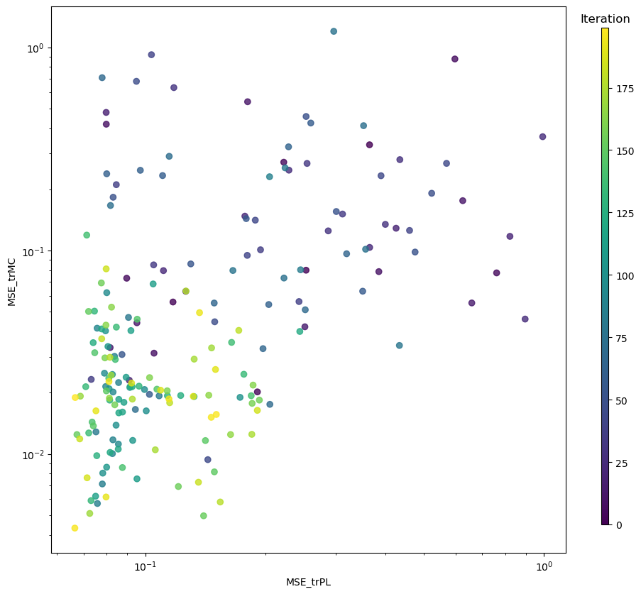
[13]:
# Interactive plotting of the objective function tradeoffs
model = ax_client.generation_strategy.model
render(plot_objective_vs_constraints(model, obj_type+'_'+targets[0]['target_name'], rel=False))
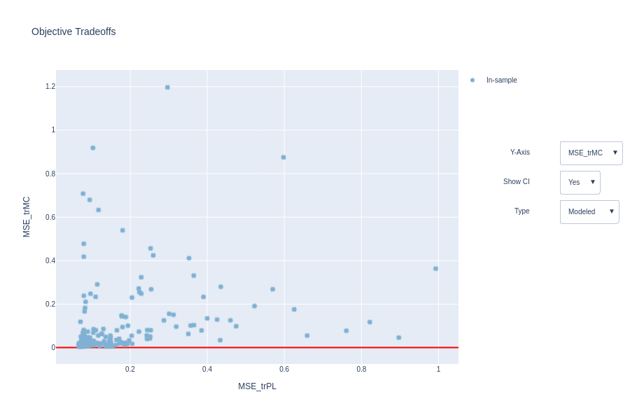
[14]:
# Plot the density of points that were sampled during the optimization process
mo.plot_density(ax_client,figsize=(10,10))
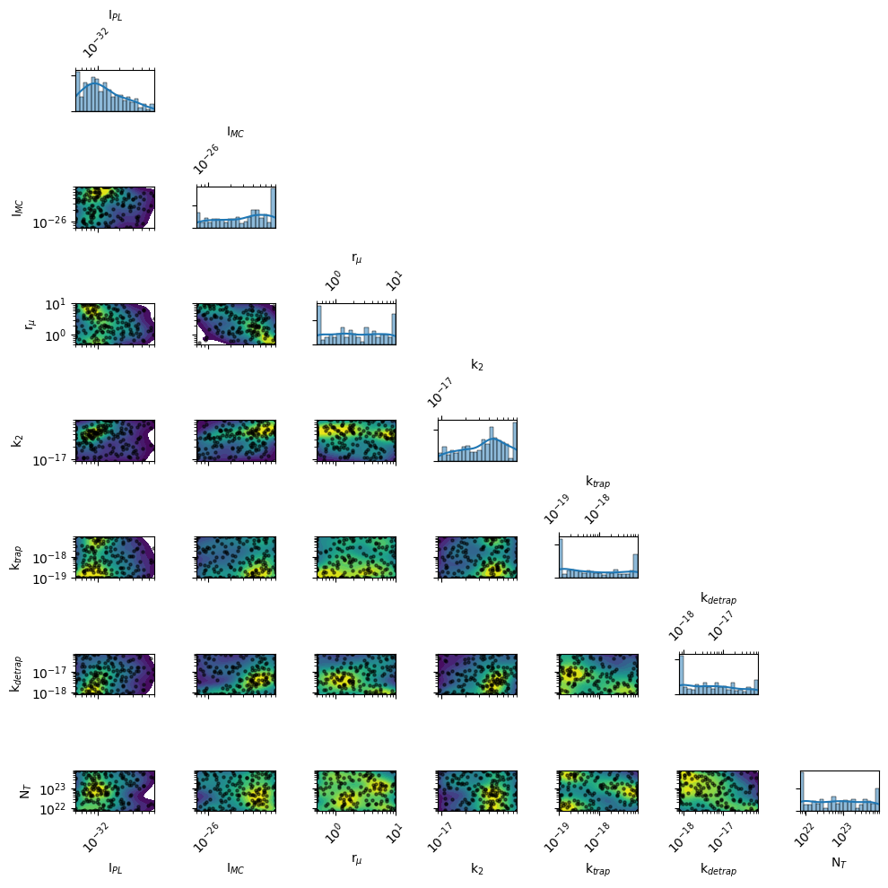
[15]:
# Plot the contour of the objective function for a given target
render(ax_client.get_contour_plot(param_x="kdirect", param_y="ktrap", metric_name=obj_type+'_'+targets[0]['target_name']))
[INFO 01-30 09:03:56] ax.service.ax_client: Retrieving contour plot with parameter 'kdirect' on X-axis and 'ktrap' on Y-axis, for metric 'MSE_trPL'. Remaining parameters are affixed to the middle of their range.
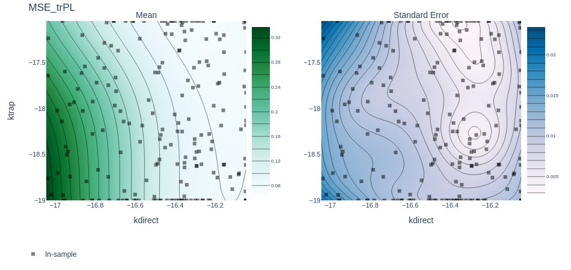
[16]:
# Plot the slice (i.e., 1D projection) of the model along the a single dimension
render(plot_slice(model, "kdirect", "MSE_trPL"))
render(plot_slice(model, "kdirect", "MSE_trMC"))
render(plot_slice(model, "ktrap", "MSE_trPL"))
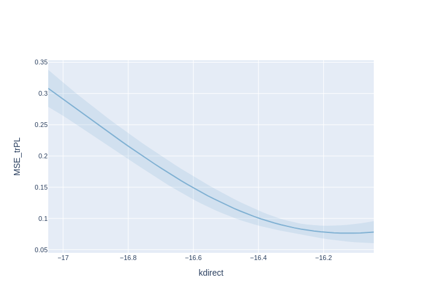
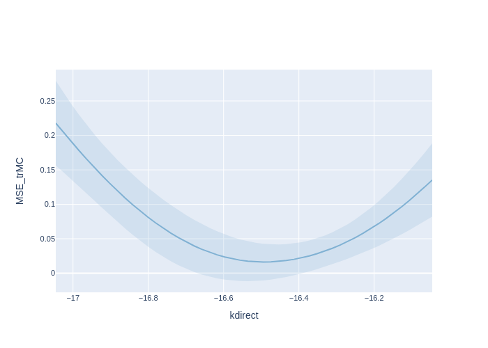
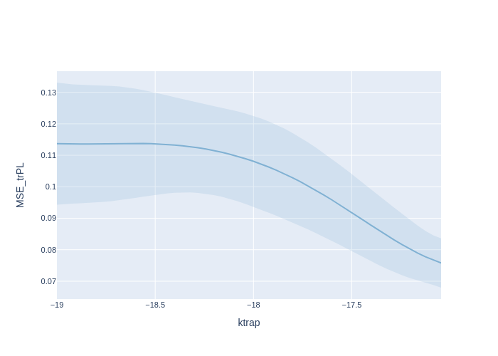
[17]:
# Plot the results of cross validation
cv_results = cross_validate(model)
render(interact_cross_validation(cv_results))
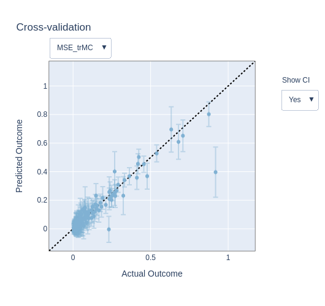
[18]:
# Plot the hypervolume evolution during the optimization
mo.plot_hypervolume(logscale=True,figsize=(10,10))
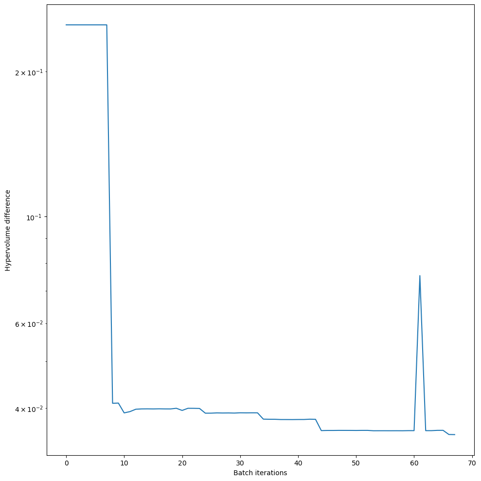
[19]:
# Interactive plot of the target during the optimization process
render(interact_fitted(model, rel=False))
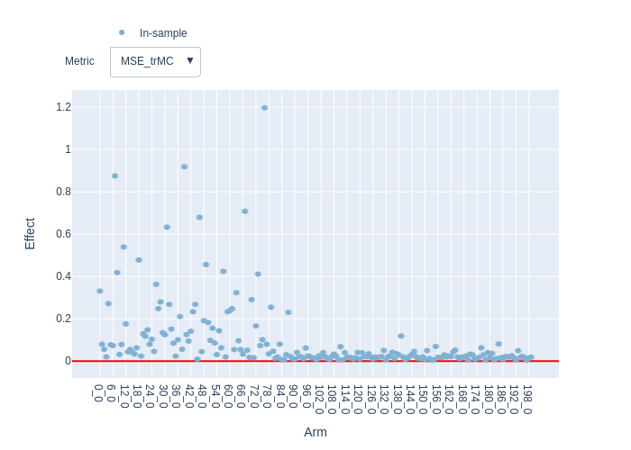
[20]:
# Compute and plot the Pareto frontier
objectives = ax_client.experiment.optimization_config.objective.objectives
frontier = compute_posterior_pareto_frontier(
experiment=ax_client.experiment,
data=ax_client.experiment.fetch_data(),
primary_objective=objectives[1].metric,
secondary_objective=objectives[0].metric,
absolute_metrics=["MSE_trPL", "MSE_trMC"],
num_points=20,
)
render(plot_pareto_frontier(frontier, CI_level=0.90))
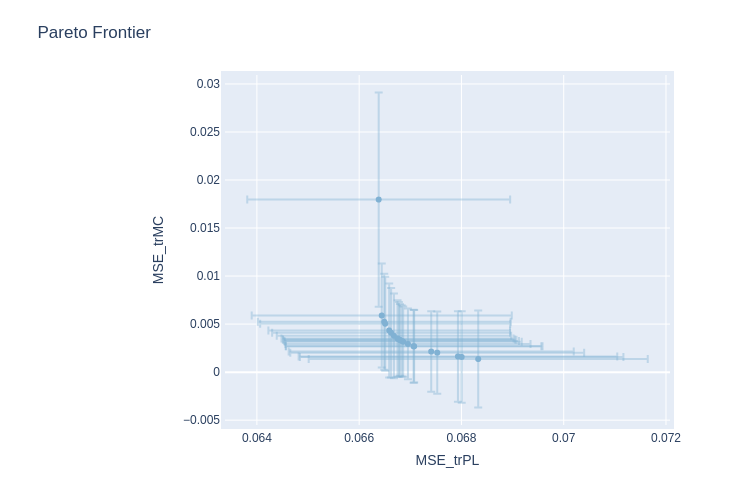
[21]:
# Plot and save the results
fit_results = []
kwargs_plot_res = {'x_scaling':1e6,'xaxis_label':'Time [$\mu$s]','xscale_type':'log','yscale_type':'log','norm_data':False,'delog':True,'figsize':(10,10)}
for num,t in enumerate(targets):
kwargs_plot_res['figname'] = os.path.join(res_dir,t['target_name']+f'_fit_{num}')
#trPL.plot_fit_res(t,mo.params,'t',xlim=[],ylim=[1e-6,1],kwargs=kwargs_plot_res)
trPL.plot_fit_res(t,mo.params,'t',xlim=[],ylim=[],kwargs=kwargs_plot_res)
X = t['data']['X']
y = t['data']['y']
X_dimensions = t['data']['X_dimensions']
yfit = t['model'](X,mo.params,X_dimensions=X_dimensions) # get the best fits
data = np.concatenate((X, y.reshape(len(y),1), yfit.reshape(len(yfit),1)), axis=1)
fit_results.append(data)
# prepare the data for saving
param_dict = trPL.get_param_dict(mo.params) # get fitparameters (and fixed ones)
pout = [[f'{v:.3E}' if isinstance(v,float) else v for _,v in pp.items()] for pp in param_dict]
# produce output excel file with data, fitparameters and FOMs
fn_xlsx = 'fits_results_BO.xlsx'
namecols = X_dimensions + ['Jexp','Jfit']
# delete old file if it exists
if os.path.exists(os.path.join(res_dir,fn_xlsx)):
os.remove(os.path.join(res_dir,fn_xlsx))
with pd.ExcelWriter(os.path.join(res_dir,fn_xlsx), mode='w') as writer:
for i,t in enumerate(targets):
if 'target_name' in t.keys():
tname = t['target_name']
else:
tname = 'data'
namecols = X_dimensions + [tname+'_exp',tname+'_fit']
df = pd.DataFrame(fit_results[i],columns=namecols)
df.to_excel(writer, sheet_name = tname+f'_{i}')
df = pd.DataFrame(pout,columns=[k for k in param_dict[0].keys()])
df.to_excel(writer, sheet_name = f'params')
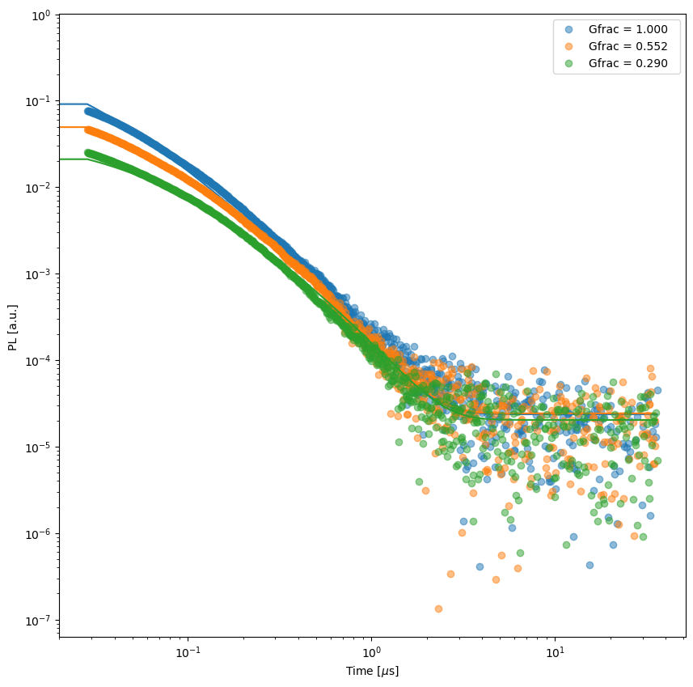
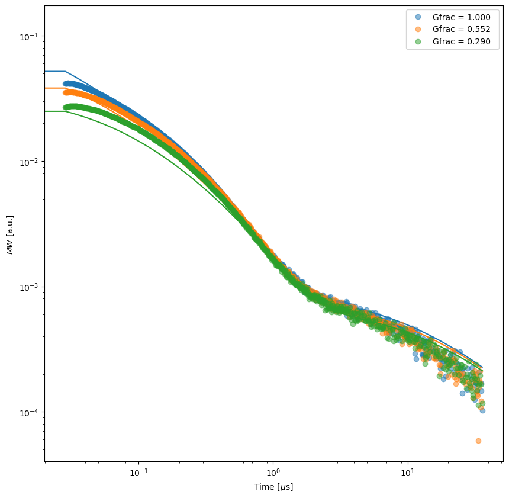
Gradient descent
Use curve fit to fine tune the parameters of the model starting from the best parameters found with the Bayesian optimization this help to give a better fit to the data without wasting time with longer Bayesian optimization runs for the fine tuning.
Note that using curve_fit alone without the Bayesian optimization is not recommended especially in high dimensional space and wide parameter ranges as it might get stick in local minima or take a long time to converge if the initial guess is not good.
[22]:
best_params = deepcopy(mo.params) # get the best parameters
for p in mo.params:
p.startVal = p.val # reset the start values to the best ones before starting the gradient descent
kwargs_curve = {'ftol':1e-8, 'xtol':1e-6, 'gtol': 1e-8, 'diff_step':0.001,'loss':'linear','maxfev':100}
print('Start curve fit')
try:
rc = mo.optimize_curvefit(kwargs=kwargs_curve) # fit the best parameters to the data
except Exception as e:
print(e)
print('Curve fit did not find a better solution')
mo.params = deepcopy(best_params) #reset the parameters to the best ones
Start curve fit
[23]:
# Plot and save the results
fit_results = []
kwargs_plot_res = {'x_scaling':1e6,'xaxis_label':'Time [$\mu$s]','xscale_type':'log','yscale_type':'log','norm_data':False,'delog':True,'figsize':(10,10)}
for num,t in enumerate(targets):
kwargs_plot_res['figname'] = os.path.join(res_dir,t['target_name']+f'_fit_{num}')
#trPL.plot_fit_res(t,mo.params,'t',xlim=[],ylim=[1e-6,1],kwargs=kwargs_plot_res)
trPL.plot_fit_res(t,mo.params,'t',xlim=[],ylim=[],kwargs=kwargs_plot_res)
X = t['data']['X']
y = t['data']['y']
X_dimensions = t['data']['X_dimensions']
yfit = t['model'](X,params,X_dimensions=X_dimensions) # get the best fits
data = np.concatenate((X, y.reshape(len(y),1), yfit.reshape(len(yfit),1)), axis=1)
fit_results.append(data)
# prepare the data for saving
param_dict = trPL.get_param_dict(mo.params) # get fitparameters (and fixed ones)
pout = [[f'{v:.3E}' if isinstance(v,float) else v for _,v in pp.items()] for pp in param_dict]
# produce output excel file with data, fitparameters and FOMs
fn_xlsx = 'fits_results.xlsx'
namecols = X_dimensions + ['Jexp','Jfit']
# delete old file if it exists
if os.path.exists(os.path.join(res_dir,fn_xlsx)):
os.remove(os.path.join(res_dir,fn_xlsx))
with pd.ExcelWriter(os.path.join(res_dir,fn_xlsx), mode='w') as writer:
for i,t in enumerate(targets):
if 'target_name' in t.keys():
tname = t['target_name']
else:
tname = 'data'
namecols = X_dimensions + [tname+'_exp',tname+'_fit']
df = pd.DataFrame(fit_results[i],columns=namecols)
df.to_excel(writer, sheet_name = tname+f'_{i}')
df = pd.DataFrame(pout,columns=[k for k in param_dict[0].keys()])
df.to_excel(writer, sheet_name = f'params')
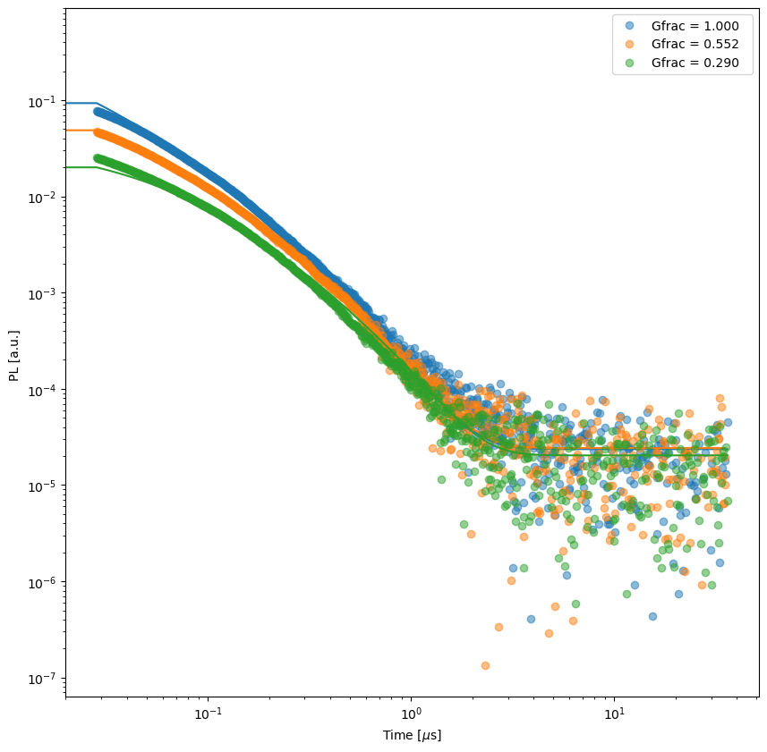

[24]:
# Print the optimized fit parameters
for p in mo.params:
if p.axis_type == 'log':
print(p.display_name + f' {p.val:.2e} {p.unit}')
else:
print(p.display_name + f' {p.val:.2f} {p.unit}')
I$_{PL}$ 1.03e-32
I$_{MC}$ 2.21e-26
r$_\mu$ 4.45e+00
k$_2$ 3.80e-17 m$^{3}$ s$^{-1}$
k$_{trap}$ 9.00e-18 m$^{3}$ s$^{-1}$
k$_{detrap}$ 3.36e-18 m$^{3}$ s$^{-1}$
N$_T$ 9.77e+22 m$^{-3}$
p$_0$ 0.00e+00 m$^{-3}$
QE 1.00
N$_0$ 1.04e+24 m$^{-3}$